10. QEMU/KVM 가상머신#
QEMU(Quick Emulator의 약자)는 실제 컴퓨터를 에뮬레이션하는 오픈 소스 하이퍼바이저입니다. QEMU가 실행되는 호스트 시스템의 관점에서 볼 때, QEMU는 파티션, 파일, 네트워크 카드와 같은 여러 로컬 리소스에 액세스할 수 있는 사용자 프로그램이며, 이는 에뮬레이션된 컴퓨터로 전달되어 마치 실제 장치인 것처럼 인식됩니다.
에뮬레이션된 컴퓨터에서 실행되는 게스트 운영 체제는 이러한 장치에 액세스하고 실제 하드웨어에서 실행되는 것처럼 실행합니다. 예를 들어 ISO 이미지를 QEMU에 매개변수로 전달하면 에뮬레이션된 컴퓨터에서 실행되는 OS는 CD 드라이브에 삽입된 실제 CD-ROM을 인식합니다.
QEMU는 ARM에서 Sparc에 이르기까지 다양한 하드웨어를 에뮬레이션할 수 있지만, Proxmox VE는 압도적인 대다수의 서버 하드웨어를 나타내기 때문에 32비트 및 64비트 PC 클론 에뮬레이션에만 관심이 있습니다. PC 클론의 에뮬레이션은 에뮬레이션된 아키텍처가 호스트 아키텍처와 동일할 때 QEMU를 크게 가속화하는 프로세서 확장의 가용성으로 인해 가장 빠른 것 중 하나입니다.
KVM(커널 기반 가상 머신)이라는 용어를 가끔 접할 수 있습니다. 이는 QEMU가 Linux KVM 모듈을 통해 가상화 프로세서 확장의 지원으로 실행 중임을 의미합니다. Proxmox VE의 맥락에서 QEMU와 KVM은 상호 교환하여 사용할 수 있습니다. Proxmox VE의 QEMU는 항상 KVM 모듈을 로드하려고 시도합니다. Proxmox VE 내부의 QEMU는 블록 및 PCI 장치에 액세스하는 데 필요하므로 루트 프로세스로 실행됩니다.
10.1. 에뮬레이션된 장치와 준가상화 장치#
QEMU에서 에뮬레이션한 PC 하드웨어에는 마더보드, 네트워크 컨트롤러, SCSI, IDE 및 SATA 컨트롤러, 직렬 포트(전체 목록은 kvm(1) 매뉴얼 페이지에서 볼 수 있음)가 포함되며, 이 모든 것이 소프트웨어에서 에뮬레이션됩니다. 이러한 모든 장치는 기존 하드웨어 장치와 정확히 동일한 소프트웨어이며, 게스트에서 실행되는 OS에 적절한 드라이버가 있는 경우 실제 하드웨어에서 실행되는 것처럼 장치를 사용합니다. 이를 통해 QEMU는 수정되지 않은 운영 체제를 실행할 수 있습니다.
그러나 이는 성능 비용이 발생합니다. 하드웨어에서 실행되도록 의도된 것을 소프트웨어에서 실행하면 호스트 CPU에 많은 추가 작업이 필요합니다. 이를 완화하기 위해 QEMU는 게스트 운영 체제에 준가상화 장치를 제공할 수 있으며, 게스트 OS는 QEMU 내부에서 실행 중임을 인식하고 하이퍼바이저와 협력합니다.
QEMU는 virtio 가상화 표준에 의존하며, 따라서 paravirtio 장치를 제공할 수 있습니다. 여기에는 paravirtio 일반 디스크 컨트롤러, paravirtio 네트워크 카드, paravirtio 직렬 포트, paravirtio SCSI 컨트롤러 등이 포함됩니다.
virtio 장치는 성능이 크게 향상되고 일반적으로 유지 관리가 더 잘 되므로 가능한 한 사용하는 것이 좋습니다. virtio 일반 디스크 컨트롤러를 에뮬레이트된 IDE 컨트롤러와 비교하면 bonnie++(8)로 측정한 순차 쓰기 처리량이 두 배가 됩니다. virtio 네트워크 인터페이스를 사용하면 iperf(1)로 측정한 에뮬레이트된 Intel E1000 네트워크 카드보다 최대 3배의 처리량을 제공할 수 있습니다.
10.2. 가상 머신 설정#
일반적으로 Proxmox VE는 가상 머신(VM)에 대해 건전한 기본값을 선택하려고 합니다. 변경하는 설정의 의미를 이해해야 합니다. 성능이 저하되거나 데이터가 위험에 처할 수 있습니다.
10.2.1. 일반 설정#
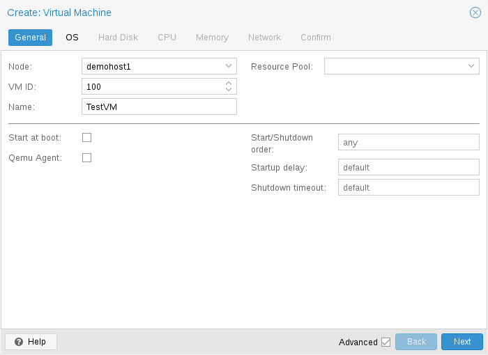
VM의 일반 설정은 다음과 같습니다.
Node
VM ID
이 Proxmox VE 설치에서 VM을 식별하는 데 사용되는 고유 번호
Name
VM을 설명하는 데 사용할 수 있는 자유 형식 텍스트 문자열
Resource Pool
VM의 논리적 그룹
10.2.2. OS 설정#
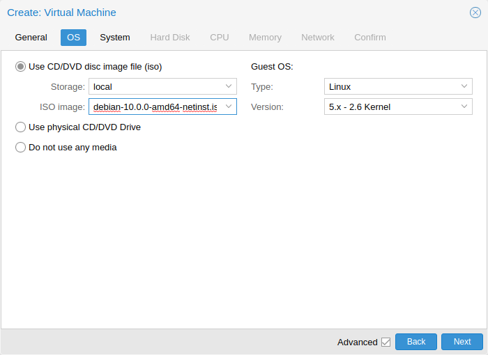
가상 머신(VM)을 생성할 때 적절한 운영 체제(OS)를 설정하면 Proxmox VE가 일부 저수준 매개변수를 최적화할 수 있습니다. 예를 들어 Windows OS는 BIOS 시계가 로컬 시간을 사용하기를 기대하는 반면, Unix 기반 OS는 BIOS 시계가 UTC 시간을 사용하기를 기대합니다.
10.2.3. 시스템 설정#
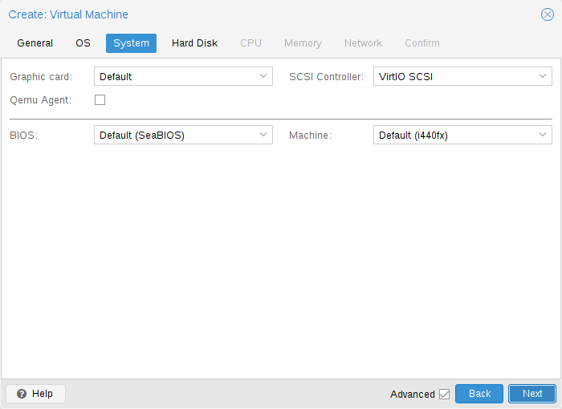
VM을 생성할 때 새 VM의 일부 기본 시스템 구성 요소를 변경할 수 있습니다. 사용할 디스플레이 유형을 지정할 수 있습니다.
또한 SCSI 컨트롤러를 변경할 수 있습니다. QEMU 게스트 에이전트를 설치할 계획이거나 선택한 ISO 이미지가 이미 제공되어 자동으로 설치되는 경우 QEMU Agent 상자를 선택하여 Proxmox VE가 해당 기능을 사용하여 더 많은 정보를 표시하고 일부 작업(예: 종료 또는 스냅샷)을 보다 지능적으로 완료할 수 있음을 알릴 수 있습니다.
Proxmox VE는 SeaBIOS 및 OVMF와 같은 다양한 펌웨어 및 머신 유형으로 VM을 부팅할 수 있습니다. 대부분의 경우 PCIe 패스스루를 사용할 계획인 경우에만 기본 SeaBIOS에서 OVMF로 전환합니다.
머신 유형
VM의 머신 유형은 VM의 가상 마더보드의 하드웨어 레이아웃을 정의합니다. 기본 Intel 440FX 또는 Q35 칩셋 중에서 선택할 수 있습니다. Q35 칩셋은 가상 PCIe 버스도 제공하므로 PCIe 하드웨어를 통과하려는 경우 바람직할 수 있습니다. 또한 vIOMMU 구현을 선택할 수 있습니다.
머신 버전
각 머신 유형은 QEMU에서 버전이 지정되고 주어진 QEMU 바이너리는 여러 머신 버전을 지원합니다. 새 버전은 새로운 기능, 수정 사항 또는 일반적인 개선 사항에 대한 지원을 제공할 수 있습니다. 그러나 가상 하드웨어의 속성도 변경합니다. 게스트 관점에서 갑작스러운 변경을 방지하고 VM 상태의 호환성을 보장하기 위해 라이브 마이그레이션 및 RAM 스냅샷은 새 QEMU 인스턴스에서 동일한 머신 버전을 계속 사용합니다.
Windows 게스트의 경우 머신 버전은 생성 중에 고정됩니다. Windows는 콜드 부팅 간에도 가상 하드웨어의 변경 사항에 민감하기 때문입니다. 예를 들어, 네트워크 장치의 열거는 머신 버전마다 다를 수 있습니다. Linux와 같은 다른 OS는 일반적으로 이러한 변경 사항을 잘 처리할 수 있습니다. 이러한 경우 최신 머신 버전이 기본적으로 사용됩니다. 즉, 새로 시작한 후에는 QEMU 바이너리에서 지원하는 최신 머신 버전이 사용됩니다(예: QEMU 8.1이 지원하는 최신 머신 버전은 각 머신 유형에 대해 버전 8.1입니다).
최신 머신 버전으로 업데이트
매우 오래된 머신 버전은 QEMU에서 더 이상 지원되지 않을 수 있습니다. 예를 들어, i440fx 머신 유형의 버전 1.4~1.7이 해당합니다. 이러한 머신 버전에 대한 지원은 언젠가 중단될 것으로 예상됩니다. 지원 중단 경고가 표시되면 머신 버전을 최신 버전으로 변경해야 합니다. 먼저 작동하는 백업을 만들고 게스트가 하드웨어를 보는 방식이 변경될 수 있으므로 대비하세요. 어떤 경우에는 특정 드라이버를 다시 설치해야 할 수도 있습니다. 이러한 머신 버전으로 찍은 RAM이 있는 스냅샷도 확인해야 합니다(예: runningmachine 구성 항목). 안타깝게도 스냅샷의 머신 버전을 변경할 방법이 없으므로 스냅샷을 로드하여 데이터를 복구해야 합니다.
10.2.4. 하드디스크#
버스/컨트롤러
QEMU는 여러 스토리지 컨트롤러를 에뮬레이션할 수 있습니다.
성능상의 이유와 더 나은 유지 관리를 위해 VirtIO SCSI 또는 VirtIO Block 컨트롤러를 사용하는 것이 좋습니다.
IDE 컨트롤러는 1984년 PC/AT 디스크 컨트롤러로 거슬러 올라가는 디자인을 가지고 있습니다. 이 컨트롤러가 최근 디자인으로 대체되었더라도 생각할 수 있는 모든 OS가 이를 지원하므로 2003년 이전에 출시된 OS를 실행하려는 경우 좋은 선택입니다. 이 컨트롤러에 최대 4개의 장치를 연결할 수 있습니다.
2003년의 SATA(Serial ATA) 컨트롤러는 보다 현대적인 디자인을 가지고 있어 더 높은 처리량과 더 많은 수의 장치를 연결할 수 있습니다. 이 컨트롤러에 최대 6개의 장치를 연결할 수 있습니다.
1985년에 설계된 SCSI 컨트롤러는 일반적으로 서버 등급 하드웨어에서 발견되며 최대 14개의 스토리지 장치를 연결할 수 있습니다. Proxmox VE는 기본적으로 LSI 53C895A 컨트롤러를 에뮬레이션합니다.
성능을 목표로 하는 경우 VirtIO SCSI single 유형의 SCSI 컨트롤러를 사용하고 연결된 디스크에 대한 IO 스레드 설정을 활성화하는 것이 좋습니다. 이는 Proxmox VE 7.3 이후 새로 생성된 Linux VM의 기본값입니다. 각 디스크에는 고유한 VirtIO SCSI 컨트롤러가 있으며 QEMU는 전용 스레드에서 디스크 IO를 처리합니다. Linux 배포판은 2012년부터 이 컨트롤러를 지원했고 FreeBSD는 2014년부터 지원했습니다. Windows OS의 경우 설치 중에 드라이버가 포함된 추가 ISO를 제공해야 합니다.
VirtIO Block 컨트롤러는 종종 VirtIO 또는 virtio-blk라고 불리며, 이전 유형의 준가상화 컨트롤러입니다. 기능 면에서 VirtIO SCSI 컨트롤러로 대체되었습니다.
이미지 형식
각 컨트롤러에서 여러 에뮬레이션된 하드 디스크를 연결하는데, 이 디스크는 구성된 스토리지에 있는 파일이나 블록 디바이스로 백업됩니다. 스토리지 유형을 선택하면 하드 디스크 이미지의 형식이 결정됩니다. 블록 디바이스(LVM, ZFS, Ceph)를 제공하는 스토리지는 원시 디스크 이미지 형식이 필요한 반면, 파일 기반 스토리지(Ext4, NFS, CIFS, GlusterFS)는 원시 디스크 이미지 형식이나 QEMU 이미지 형식을 선택할 수 있습니다.
QEMU 이미지 형식은 스냅샷과 디스크 이미지의 씬 프로비저닝을 허용하는 쓰기 시 복사 형식입니다.
원시 디스크 이미지는 Linux에서 블록 디바이스에서 dd 명령을 실행할 때 얻는 것과 유사한 하드 디스크의 비트 대 비트 이미지입니다. 이 형식은 씬 프로비저닝이나 스냅샷을 자체적으로 지원하지 않으므로 이러한 작업을 위해 스토리지 계층의 협조가 필요합니다. 그러나 QEMU 이미지 형식보다 최대 10% 더 빠를 수 있습니다.
VMware 이미지 형식은 디스크 이미지를 다른 하이퍼바이저로 가져오거나 내보내려는 경우에만 의미가 있습니다.
캐시 모드
하드 드라이브의 캐시(Cache) 모드를 설정하면 호스트 시스템이 게스트 시스템에 블록 쓰기 완료를 알리는 방식에 영향을 미칩니다. 캐시 없음(No Cache) 기본값은 각 블록이 물리적 스토리지 쓰기 대기열에 도달하면 게스트 시스템에 쓰기가 완료되었다는 알림이 전송되고 호스트 페이지 캐시는 무시된다는 것을 의미합니다. 이는 안전성과 속도 간의 적절한 균형을 제공합니다.
Proxmox VE 백업 관리자가 VM 백업을 수행할 때 디스크를 건너뛰게 하려면 해당 디스크에서 백업 없음(No backup) 옵션을 설정할 수 있습니다.
Proxmox VE 스토리지 복제 메커니즘이 복제 작업을 시작할 때 디스크를 건너뛰게 하려면 해당 디스크에서 복제 건너뛰기(Skip replication) 옵션을 설정할 수 있습니다. Proxmox VE 5.0부터 복제에는 디스크 이미지가 zfspool 유형의 스토리지에 있어야 하므로 VM에 복제가 구성된 경우 다른 스토리지에 디스크 이미지를 추가하려면 이 디스크 이미지에 대한 복제를 건너뛰어야 합니다.
Trim/Discard
스토리지가 씬 프로비저닝을 지원하는 경우(Proxmox VE 가이드의 스토리지 챕터 참조) 드라이브에서 Discard 옵션을 활성화할 수 있습니다. Discard가 설정되고 TRIM이 활성화된 게스트 OS가 있는 경우 VM의 파일 시스템이 파일을 삭제한 후 블록을 사용하지 않는 것으로 표시하면 컨트롤러가 이 정보를 스토리지로 전달하여 디스크 이미지를 그에 따라 축소합니다. 게스트가 TRIM 명령을 실행할 수 있도록 하려면 드라이브에서 Discard 옵션을 활성화해야 합니다. 일부 게스트 운영 체제에서는 SSD 에뮬레이션 플래그를 설정해야 할 수도 있습니다. VirtIO Block 드라이브에서 Discard는 Linux Kernel 5.0 이상을 사용하는 게스트에서만 지원됩니다.
드라이브를 회전형 하드 디스크가 아닌 솔리드 스테이트 드라이브로 게스트에게 표시하려면 해당 드라이브에서 SSD 에뮬레이션 옵션을 설정할 수 있습니다. 기본 스토리지가 실제로 SSD로 백업되어야 한다는 요구 사항은 없습니다. 이 기능은 모든 유형의 물리적 미디어에서 사용할 수 있습니다. VirtIO Block 드라이브에서는 SSD 에뮬레이션이 지원되지 않습니다.
IO 스레드
IO 스레드 옵션은 VirtIO 컨트롤러가 있는 디스크를 사용하거나 에뮬레이트된 컨트롤러 유형이 VirtIO SCSI single인 SCSI 컨트롤러가 있는 경우에만 사용할 수 있습니다. IO 스레드가 활성화되면 QEMU는 기본 이벤트 루프 또는 vCPU 스레드에서 모든 I/O를 처리하는 대신 스토리지 컨트롤러당 하나의 I/O 스레드를 만듭니다. 한 가지 이점은 기본 스토리지의 더 나은 작업 분배 및 활용입니다. 또 다른 이점은 메인 스레드나 vCPU 스레드가 디스크 I/O에 의해 차단될 수 없기 때문에 매우 I/O 집약적인 호스트 작업 부하에 대한 게스트의 대기 시간(멈춤)이 줄어드는 것입니다.
10.2.5. CPU#
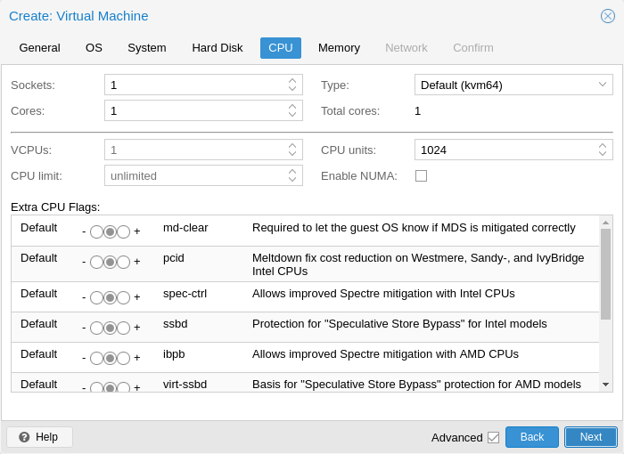
CPU 소켓은 CPU를 연결할 수 있는 PC 마더보드의 실제 슬롯입니다. 이 CPU는 독립적인 처리 장치인 하나 이상의 코어를 포함할 수 있습니다. 4개의 코어가 있는 단일 CPU 소켓이든 2개의 코어가 있는 2개의 CPU 소켓이든 성능 관점에서는 대부분 중요하지 않습니다. 그러나 일부 소프트웨어 라이선스는 머신의 소켓 수에 따라 달라지므로 이 경우 라이선스에서 허용하는 소켓 수를 설정하는 것이 합리적입니다.
가상 CPU(코어 및 소켓) 수를 늘리면 일반적으로 성능이 향상되지만 이는 VM 사용에 크게 좌우됩니다. 멀티스레드 애플리케이션은 물론 많은 수의 가상 CPU에서 이점을 얻을 수 있습니다. 추가하는 각 가상 CPU에 대해 QEMU는 호스트 시스템에 새 실행 스레드를 만들기 때문입니다. VM의 작업 부하에 대해 확신이 없다면 일반적으로 총 코어 수를 2로 설정하는 것이 안전합니다.
모든 VM의 전체 코어 수가 서버의 코어 수보다 큰 경우(예: 코어가 8개인 머신에서 각각 코어가 4개인 VM 4개(= 총 16개)) 완벽하게 안전합니다. 이 경우 호스트 시스템은 표준 멀티스레드 애플리케이션을 실행하는 것처럼 서버 코어 간에 QEMU 실행 스레드를 균형 있게 조정합니다. 그러나 Proxmox VE는 물리적으로 사용 가능한 것보다 더 많은 가상 CPU 코어가 있는 VM을 시작하지 못하게 합니다. 컨텍스트 전환 비용으로 인해 성능이 저하될 뿐입니다.
리소스 제한
☑︎ cpulimit
가상 코어 수 외에도 VM에 사용 가능한 총 “호스트 CPU 시간”을 cpulimit 옵션으로 설정할 수 있습니다. CPU 시간을 백분율로 나타낸 부동 소수점 값이므로 1.0은 100%, 2.5는 250%와 같습니다. 단일 프로세스가 단일 코어 하나를 완전히 사용하면 CPU 시간 사용량이 100%가 됩니다. 코어가 4개인 VM이 모든 코어를 완전히 활용하면 이론적으로 400%가 됩니다. 실제로는 QEMU가 vCPU 코어 외에 VM 주변 장치에 대한 추가 스레드를 가질 수 있으므로 사용량이 조금 더 높을 수 있습니다.
이 설정은 VM이 일부 프로세스를 병렬로 실행하기 때문에 여러 vCPU가 있어야 하지만 VM 전체가 모든 vCPU를 동시에 100%로 실행할 수 없는 경우에 유용할 수 있습니다.
예를 들어, 8개의 가상 CPU가 있으면 도움이 되는 가상 머신이 있지만, VM이 모든 8개 코어를 전체 부하로 실행하여 최대로 사용할 수 있기를 원하지 않는 경우를 가정해 보겠습니다. 그러면 서버에 과부하가 걸리고 다른 가상 머신과 컨테이너에 CPU 시간이 너무 적게 남게 됩니다. 이를 해결하려면 cpulimit을 4.0(=400%)으로 설정할 수 있습니다. 즉, VM이 8개 프로세스를 동시에 실행하여 모든 8개 가상 CPU를 완전히 활용하면 각 vCPU는 물리적 코어에서 최대 50%의 CPU 시간을 받습니다. 그러나 VM 워크로드가 4개의 가상 CPU만 완전히 활용하면 물리적 코어에서 최대 100%의 CPU 시간을 받을 수 있어 총 400%가 됩니다.
VM은 구성에 따라 네트워킹이나 IO 작업과 같은 추가 스레드를 사용할 수 있지만 라이브 마이그레이션도 가능합니다. 따라서 VM은 가상 CPU만이 사용할 수 있는 것보다 더 많은 CPU 시간을 사용할 수 있습니다. VM이 할당된 vCPU보다 더 많은 CPU 시간을 사용하지 않도록 하려면 cpulimit을 총 코어 수와 동일한 값으로 설정합니다.
☑︎ cpuunits
cpuunits 옵션을 사용하면 요즘은 CPU 공유 또는 CPU 가중치라고도 하며, 실행 중인 다른 VM과 비교하여 VM이 얻는 CPU 시간을 제어할 수 있습니다. 이는 상대적 가중치로, 기본값은 100(또는 호스트가 레거시 cgroup v1을 사용하는 경우 1024)입니다. VM에 대해 이 값을 늘리면 스케줄러가 가중치가 낮은 다른 VM과 비교하여 우선순위를 지정합니다.
예를 들어 VM 100이 기본값인 100을 설정하고 VM 200을 200으로 변경한 경우, 후자의 VM 200은 첫 번째 VM 100보다 두 배의 CPU 대역폭을 받습니다.
자세한 내용은 man systemd.resource-control을 참조하세요. 여기서 CPUQuota는 cpulimit에 해당하고 CPUWeight는 cpuunits 설정에 해당합니다. 참조 및 구현 세부 정보는 참고 사항 섹션을 참조하세요.
☑︎ affinity
affinity 옵션을 사용하면 VM의 vCPU를 실행하는 데 사용되는 실제 CPU 코어를 지정할 수 있습니다. I/O와 같은 주변 VM 프로세스는 이 설정의 영향을 받지 않습니다. CPU 친화성은 보안 기능이 아니라는 점에 유의하세요.
CPU 친화성을 강제하는 것은 특정 경우에 의미가 있을 수 있지만 복잡성과 유지 관리 노력이 증가합니다. 예를 들어 나중에 더 많은 VM을 추가하거나 VM을 CPU 코어가 적은 노드로 마이그레이션하려는 경우입니다. 일부 CPU가 완전히 활용되는 반면 다른 CPU는 거의 유휴 상태인 경우 비동기적이고 따라서 시스템 성능이 제한될 수도 있습니다.
친화성은 taskset CLI 도구를 통해 설정됩니다. man cpuset의 목록 형식에서 호스트 CPU 번호(lscpu 참조)를 허용합니다. 이 ASCII 10진수 목록에는 숫자뿐만 아니라 숫자 범위도 포함될 수 있습니다. 예를 들어 친화성 0-1,8-11(확장된 0, 1, 8, 9, 10, 11)은 VM이 이 6개의 특정 호스트 코어에서만 실행되도록 허용합니다.
CPU 유형
QEMU는 486에서 최신 Xeon 프로세서까지 다양한 CPU 유형을 에뮬레이션할 수 있습니다. 새로운 프로세서 세대마다 하드웨어 지원 3D 렌더링, 난수 생성, 메모리 보호 등의 새로운 기능이 추가됩니다. 또한 현재 세대는 버그 또는 보안 수정 사항이 포함된 마이크로코드 업데이트를 통해 업그레이드할 수 있습니다.
일반적으로 VM에 호스트 시스템의 CPU와 거의 일치하는 프로세서 유형을 선택해야 합니다. 즉, 호스트 CPU 기능(CPU 플래그라고도 함)을 VM에서 사용할 수 있습니다. 정확히 일치하도록 하려면 CPU 유형을 호스트로 설정하면 됩니다. 이 경우 VM은 호스트 시스템과 정확히 동일한 CPU 플래그를 갖게 됩니다.
하지만 이 방법에는 단점이 있습니다. 여러 호스트 간에 VM을 라이브 마이그레이션하려는 경우 VM이 다른 CPU 유형이나 다른 마이크로코드 버전이 있는 새 시스템에 있을 수 있습니다. 게스트에 전달된 CPU 플래그가 없으면 QEMU 프로세스가 중지됩니다. 이를 해결하기 위해 QEMU에는 Proxmox VE가 기본적으로 사용하는 자체 가상 CPU 유형도 있습니다.
백엔드 기본값은 kvm64로, 기본적으로 모든 x86_64 호스트 CPU에서 작동하고 새 VM을 만들 때 UI 기본값은 x86-64-v2-AES로, Intel의 경우 Westmere에서 시작하는 호스트 CPU 또는 AMD의 경우 최소 4세대 Opteron이 필요합니다.
간단히 말해서 라이브 마이그레이션이 중요하지 않거나 모든 노드가 동일한 CPU와 동일한 마이크로코드 버전을 갖는 동종 클러스터가 있는 경우 CPU 유형을 호스트로 설정하세요. 이론적으로 게스트에게 최대 성능을 제공합니다.
라이브 마이그레이션과 보안이 중요하고 Intel CPU만 있거나 AMD CPU만 있는 경우 클러스터의 가장 낮은 세대 CPU 모델을 선택하세요.
보안 없이 라이브 마이그레이션이 중요하거나 Intel/AMD 클러스터가 혼합된 경우 가장 낮은 호환 가상 QEMU CPU 유형을 선택하세요.
Intel과 AMD 호스트 CPU 간의 라이브 마이그레이션은 작동을 보장하지 않습니다.
QEMU에 정의된 AMD 및 Intel CPU 유형 목록도 참조하세요.
QEMU CPU 유형
QEMU는 Intel 및 AMD 호스트 CPU와 호환되는 가상 CPU 유형도 제공합니다.
가상 CPU 유형에 대한 Spectre 취약성을 완화하려면 관련 CPU 플래그를 추가해야 합니다. Meltdown/Spectre 관련 CPU 플래그를 참조하세요.
역사적으로 Proxmox VE는 Pentium 4 수준의 CPU 플래그가 활성화된 kvm64 CPU 모델을 사용했기 때문에 특정 워크로드에 대한 성능이 좋지 않았습니다.
2020년 여름, AMD, Intel, Red Hat, SUSE가 협력하여 x86-64 기준선 위에 세 가지 x86-64 마이크로아키텍처 수준을 정의했으며 최신 플래그가 활성화되었습니다. 자세한 내용은 x86-64-ABI 사양을 참조하세요.
CentOS 9와 같은 일부 최신 배포판은 이제 최소 요구 사항으로 x86-64-v2 플래그로 빌드되었습니다.
kvm64(x86-64-v1)
Intel CPU >= Pentium 4, AMD CPU >= Phenom과 호환.
x86-64-v2
Intel CPU >= Nehalem, AMD CPU >= Opteron_G3과 호환. x86-64-v1과 비교하여 CPU 플래그 추가: +cx16, +lahf-lm, +popcnt, +pni, +sse4.1, +sse4.2, +ssse3.
x86-64-v2-AES
Intel CPU >= Westmere, AMD CPU >= Opteron_G4와 호환. x86-64-v2와 비교하여 CPU 플래그 추가: +aes.
x86-64-v3
Intel CPU >= Broadwell, AMD CPU >= EPYC와 호환. x86-64-v2-AES와 비교한 CPU 플래그 추가: +avx, +avx2, +bmi1, +bmi2, +f16c, +fma, +movbe, +xsave.
x86-64-v4
Intel CPU >= Skylake, AMD CPU >= EPYC v4 Genoa와 호환. x86-64-v3와 비교한 CPU 플래그 추가: +avx512f, +avx512bw, +avx512cd, +avx512dq, +avx512vl.
! 사용자 지정 CPU 유형
구성 가능한 기능 세트로 사용자 지정 CPU 유형을 지정할 수 있습니다. 이는 관리자가 구성 파일 /etc/pve/virtual-guest/cpu-models.conf에서 유지 관리합니다. 형식 세부 정보는 man cpu-models.conf를 참조하세요.
지정된 사용자 지정 유형은 /nodes에 대한 Sys.Audit 권한이 있는 모든 사용자가 선택할 수 있습니다. CLI 또는 API를 통해 VM에 대한 사용자 지정 CPU 유형을 구성할 때 이름 앞에 custom-.을 접두사로 붙여야 합니다.
Meltdown/Spectre 관련 CPU
플래그
VM의 선택된 CPU 유형이 기본적으로 이미 활성화되어 있지 않은 한 수동으로 설정해야 하는 Meltdown 및 Spectre 취약성과 관련된 여러 CPU 플래그가 있습니다.
이러한 CPU 플래그를 사용하려면 두 가지 요구 사항을 충족해야 합니다.
호스트 CPU는 해당 기능을 지원하고 게스트의 가상 CPU로 전파해야 합니다.
게스트 운영 체제는 공격을 완화하고 CPU 기능을 활용할 수 있는 버전으로 업데이트해야 합니다.
그렇지 않으면 웹 UI에서 CPU 옵션을 편집하거나 VM 구성 파일에서 CPU 옵션의 플래그 속성을 설정하여 가상 CPU의 원하는 CPU 플래그를 설정해야 합니다.
Spectre v1, v2, v4 수정의 경우 CPU 또는 시스템 공급업체도 CPU에 대한 소위 “마이크로코드 업데이트”를 제공해야 합니다. 펌웨어 업데이트 장을 참조하세요. 영향을 받는 모든 CPU가 spec-ctrl을 지원하도록 업데이트할 수 있는 것은 아닙니다.
Proxmox VE 호스트가 취약한지 확인하려면 루트로 다음 명령을 실행합니다.
for f in /sys/devices/system/cpu/vulnerabilities/*; do echo "${f##*/} -" $(cat "$f"); done
Intel 프로세서
pcid
이것은 커널 메모리를 사용자 공간에서 효과적으로 숨기는 커널 페이지 테이블 격리(KPTI)라는 Meltdown(CVE-2017-5754) 완화책의 성능 영향을 줄입니다. PCID가 없으면 KPTI는 매우 비싼 메커니즘입니다
Proxmox VE 호스트가 PCID를 지원하는지 확인하려면 루트로 다음 명령을 실행합니다.
# grep ' pcid ' /proc/cpuinfo이 명령이 비어 있지 않으면 호스트의 CPU가 pcid를 지원합니다.
spec-ctrl
retpolines가 충분하지 않은 경우 Spectre v1(CVE-2017-5753) 및 Spectre v2(CVE-2017-5715) 수정을 활성화하는 데 필요합니다. -IBRS 접미사가 있는 Intel CPU 모델에 기본적으로 포함됩니다. -IBRS 접미사가 없는 Intel CPU 모델의 경우 명시적으로 켜야 합니다. 업데이트된 호스트 CPU 마이크로코드가 필요합니다(intel-microcode >= 20180425).
ssbd
Spectre V4(CVE-2018-3639) 수정을 활성화하는 데 필요합니다. 모든 Intel CPU 모델에 기본적으로 포함되지 않습니다. 모든 Intel CPU 모델에서 명시적으로 켜야 합니다. 업데이트된 호스트 CPU 마이크로코드가 필요합니다(intel-microcode >= 20180703).
AMD 프로세서
ibpb
Retpolines가 충분하지 않은 경우 Spectre v1(CVE-2017-5753) 및 Spectre v2(CVE-2017-5715) 수정을 활성화하는 데 필요합니다. -IBPB 접미사가 있는 AMD CPU 모델에 기본적으로 포함됩니다. -IBPB 접미사가 없는 AMD CPU 모델의 경우 명시적으로 켜야 합니다. 게스트 CPU에 사용하기 전에 호스트 CPU 마이크로코드가 이 기능을 지원해야 합니다.
virt-ssbd
Spectre v4(CVE-2018-3639) 수정을 활성화하는 데 필요합니다. 모든 AMD CPU 모델에 기본적으로 포함되지 않습니다. 모든 AMD CPU 모델에 명시적으로 켜야 합니다. 최대 게스트 호환성을 위해 amd-ssbd도 제공되더라도 게스트에 제공해야 합니다. “호스트” CPU 모델을 사용할 때는 이 기능을 명시적으로 활성화해야 합니다. 이는 물리적 CPU에 없는 가상 기능이기 때문입니다.
amd-ssbd
Spectre v4(CVE-2018-3639) 수정을 활성화하는 데 필요합니다. 모든 AMD CPU 모델에 기본적으로 포함되지 않습니다. 모든 AMD CPU 모델에 대해 명시적으로 켜야 합니다. 이는 virt-ssbd보다 더 높은 성능을 제공하므로 이를 지원하는 호스트는 가능하면 항상 게스트에 이를 노출해야 합니다. 일부 커널은 virt-ssbd만 알고 있으므로 virt-ssbd도 최대 게스트 호환성을 위해 노출해야 합니다.
amd-no-ssb
호스트가 Spectre V4(CVE-2018-3639)에 취약하지 않음을 나타내기 위해 권장됩니다. 모든 AMD CPU 모델에 기본적으로 포함되지 않습니다. CPU의 향후 하드웨어 세대는 CVE-2018-3639에 취약하지 않을 것이므로 게스트에게 amd-no-ssb를 노출하여 완화책을 활성화하지 말라고 알려야 합니다. 이는 virt-ssbd 및 amd-ssbd와 상호 배타적입니다.
NUMA
선택적으로 VM에서 NUMA 아키텍처를 에뮬레이션할 수도 있습니다. NUMA 아키텍처의 기본은 모든 코어에서 사용할 수 있는 글로벌 메모리 풀 대신 메모리가 각 소켓 근처의 로컬 뱅크로 분산된다는 것을 의미합니다. 이렇게 하면 메모리 버스가 더 이상 병목 현상이 되지 않으므로 속도가 향상될 수 있습니다. 시스템에 NUMA 아키텍처가 있는 경우 호스트 시스템에서 VM 리소스를 적절히 분배할 수 있으므로 옵션을 활성화하는 것이 좋습니다. 이 옵션은 VM에서 코어나 RAM을 핫 플러그하는 데에도 필요합니다.
NUMA 옵션을 사용하는 경우 소켓 수를 호스트 시스템의 노드 수로 설정하는 것이 좋습니다.
vCPU 핫 플러그
최신 운영 체제는 실행 중인 시스템에서 CPU를 핫 플러그하고 어느 정도 핫 언플러그하는 기능을 도입했습니다. 가상화를 통해 이러한 시나리오에서 실제 하드웨어가 일으킬 수 있는 많은 (물리적) 문제를 피할 수 있습니다. 그래도 이것은 다소 새롭고 복잡한 기능이므로 절대적으로 필요한 경우에만 사용해야 합니다. 대부분의 기능은 다른 잘 테스트되고 덜 복잡한 기능으로 복제할 수 있습니다. 리소스 제한을 참조하세요.
Proxmox VE에서 최대 CPU 연결 수는 항상 코어 * 소켓입니다. 이 총 코어 수보다 적은 CPU로 VM을 시작하려면 vcpus 설정을 사용할 수 있습니다. 이는 VM 시작 시 연결해야 하는 vCPU 수를 나타냅니다.
현재 이 기능은 Linux에서만 지원되며 3.10보다 최신인 커널이 필요하고 4.7보다 최신인 커널을 권장합니다.
다음과 같이 udev 규칙을 사용하여 게스트에서 새 CPU를 자동으로 온라인으로 설정할 수 있습니다.
SUBSYSTEM=="cpu", ACTION=="add", TEST=="online", ATTR{online}=="0", ATTR{online}="1"
/etc/udev/rules.d/에 .rules로 끝나는 파일로 저장하세요.
참고: CPU 핫 제거는 머신에 따라 다르며 게스트 협력이 필요합니다. 삭제 명령은 CPU 제거가 실제로 발생하는 것을 보장하지 않으며, 일반적으로 x86/amd64의 ACPI와 같은 대상 종속 메커니즘을 사용하여 게스트 OS로 전달되는 요청입니다.
10.2.6. 메모리#
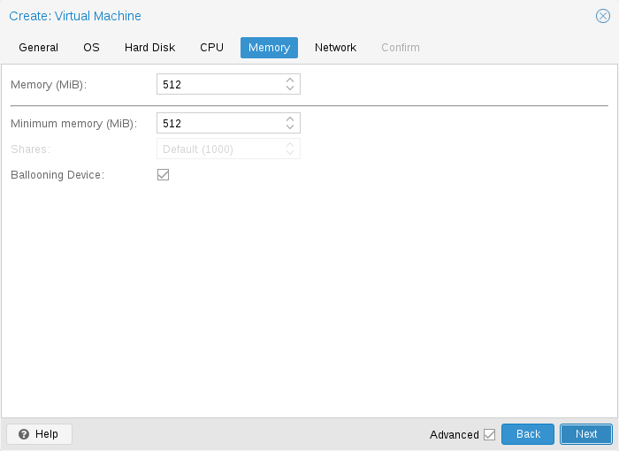
각 VM에 대해 고정 크기 메모리를 설정하거나 Proxmox VE에 호스트의 현재 RAM 사용량에 따라 동적으로 메모리를 할당하도록 요청할 수 있습니다.
고정 메모리 할당
메모리와 최소 메모리를 같은 양으로 설정하면 Proxmox VE는 지정한 내용을 VM에 할당합니다.
고정 메모리 크기를 사용하더라도 게스트가 실제로 사용하는 메모리 양과 같은 유용한 정보를 제공하기 때문에 풍선 장치가 VM에 추가됩니다. 일반적으로 ballooning 장치는 활성화된 상태로 두어야 하지만 비활성화하려는 경우(디버깅 목적 등) Ballooning Device 선택을 취소하거나 구성에서 아래 설정만 하면 됩니다.
balloon: 0
자동 메모리 할당
최소 메모리를 메모리보다 낮게 설정하면 Proxmox VE는 지정한 최소량을 항상 VM에서 사용할 수 있도록 하고, 호스트의 RAM 사용량이 80% 미만이면 최대 메모리까지 게스트에 동적으로 메모리를 추가합니다.
호스트의 RAM이 부족하면 VM은 일부 메모리를 호스트로 다시 해제하고, 필요한 경우 실행 중인 프로세스를 스왑하고 마지막 수단으로 oom killer를 시작합니다. 호스트와 게스트 간의 메모리 전달은 게스트 내부에서 실행되는 특수 balloon 커널 드라이버를 통해 수행되며, 이 드라이버는 호스트에서 메모리 페이지를 가져오거나 해제합니다.
여러 VM이 자동 할당 기능을 사용하는 경우 각 VM이 차지해야 하는 여유 호스트 메모리의 상대적 양을 나타내는 공유 계수를 설정할 수 있습니다. 예를 들어 4개의 VM이 있고 그 중 3개가 HTTP 서버를 실행하고 마지막 하나가 데이터베이스 서버라고 가정해 보겠습니다. 데이터베이스 서버 RAM에 더 많은 데이터베이스 블록을 캐시하려면 여유 RAM을 사용할 수 있을 때 데이터베이스 VM을 우선시해야 합니다. 이를 위해 데이터베이스 VM에 Shares 속성 3000을 할당하고 다른 VM은 Shares 기본 설정인 1000으로 둡니다. 호스트 서버에는 32GB의 RAM이 있으며 현재 16GB를 사용 중이므로 구성된 최소 메모리 양 외에 32 * 80/100 - 16 = 9GB RAM을 VM에 할당할 수 있습니다. 데이터베이스 VM은 9 * 3000 / (3000 + 1000 + 1000 + 1000) = 4.5GB의 추가 RAM과 각 HTTP 서버에서 1.5GB의 이점을 얻습니다.
2010년 이후에 출시된 모든 Linux 배포판에는 벌룬 커널 드라이버가 포함되어 있습니다. Windows OS의 경우 벌룬 드라이버를 수동으로 추가해야 하며 게스트 속도가 느려질 수 있으므로 중요한 시스템에서는 사용하지 않는 것이 좋습니다.
VM에 RAM을 할당할 때는 항상 호스트에서 사용할 수 있는 1GB의 RAM을 남겨두는 것이 좋습니다.
10.2.7. 메모리 암호화#
AMD SEV
SEV(Secure Encrypted Virtualization)는 AES-128 암호화와 AMD Secure Processor를 사용하여 VM당 메모리 암호화를 가능하게 합니다.
SEV-ES(Secure Encrypted Virtualization-Encrypted State)는 VM이 실행을 멈출 때 모든 CPU 레지스터 내용을 암호화하여 하이퍼바이저로의 정보 유출을 방지합니다. 이 기능은 매우 실험적입니다.
호스트 요구 사항:
AMD EPYC CPU
SEV-ES는 AMD EPYC 7xx2 이상에서만 지원됩니다.
호스트 머신의 BIOS 설정에서 AMD 메모리 암호화를 구성합니다.
기본적으로 활성화되지 않은 경우 커널 매개변수에 “kvm_amd.sev=1”을 추가합니다.
호스트(SME)에서 메모리를 암호화하려면 커널 매개변수에 “mem_encrypt=on”을 추가합니다. https://www.kernel.org/doc/Documentation/x86/amd-memory-encryption.txt를 참조하세요.
SWIOTLB를 늘릴 수도 있습니다. https://github.com/AMDESE/AMDSEV#faq-4를 참조하세요.
호스트에서 SEV가 활성화되었는지 확인하려면 dmesg에서 sev를 검색하고 kvm_amd의 SEV 커널 매개변수를 출력합니다.
# dmesg | grep -i sev
[...] ccp 0000:45:00.1: sev enabled
[...] ccp 0000:45:00.1: SEV API: <buildversion>
[...] SEV supported: <number> ASIDs
[...] SEV-ES supported: <number> ASIDs
# cat /sys/module/kvm_amd/parameters/sev
Y
게스트 요구 사항:
edk2-OVMF
Q35를 사용하는 것이 좋습니다.
게스트 운영 체제에는 SEV 지원이 포함되어야 합니다.
제한 사항:
메모리가 암호화되어 있기 때문에 호스트의 메모리 사용량이 항상 잘못됩니다.
스냅샷 및 라이브 마이그레이션과 같은 메모리 저장 또는 복원과 관련된 작업은 아직 작동하지 않거나 공격받을 수 있습니다. https://github.com/PSPReverse/amd-sev-migration-attack
PCI 패스스루는 지원되지 않습니다.
SEV-ES는 매우 실험적입니다.
QEMU 및 AMD-SEV 문서는 매우 제한적입니다.
구성 예:
# qm set <vmid> -amd_sev type=std,no-debug=1,no-key-sharing=1,kernel-hashes=1
유형은 암호화 기술을 정의합니다(“type=”은 필요하지 않음). 사용 가능한 옵션은 std 및 es입니다.
QEMU policy 매개변수는 no-debug 및 no-key-sharing 매개변수로 계산됩니다. 이러한 매개변수는 정책 비트 0 및 1에 해당합니다. 유형이 es인 경우 정책 비트 2가 1로 설정되어 SEV-ES가 활성화됩니다. 정책 비트 3(nosend)은 마이그레이션 공격을 방지하기 위해 항상 1로 설정됩니다. 정책을 계산하는 방법에 대한 자세한 내용은 AMD SEV API 사양 3장을 참조하세요.
kernel-hashes 옵션은 커널/initrd를 측정하지 않는 이전 OVMF 이미지 및 게스트와의 하위 호환성을 위해 기본적으로 꺼져 있습니다. https://lists.gnu.org/archive/html/qemu-devel/2021-11/msg02598.html을 참조하세요.
SEV가 게스트에서 작동하는지 확인합니다.
방법 1 - dmesg:
출력은 다음과 같아야 합니다.
# dmesg | grep -i sev
AMD Memory Encryption Features active: SEV
방법 2 - MSR 0xc0010131(MSR_AMD64_SEV):
출력은 1이어야 합니다.
# apt install msr-tools
# modprobe msr
# rdmsr -a 0xc0010131
1
10.2.8. 네트워크 장치#
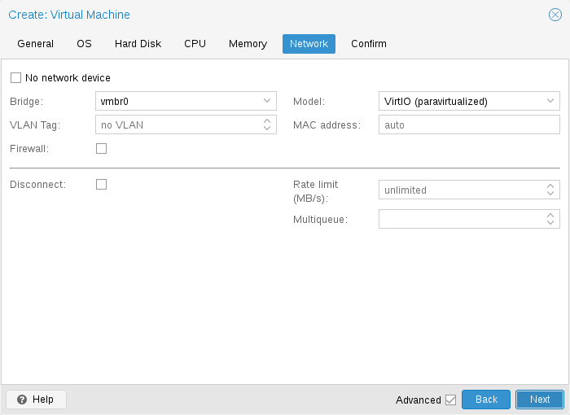
각 VM에는 네 가지 유형의 네트워크 인터페이스 컨트롤러(NIC)가 많이 있을 수 있습니다.
Intel E1000이 기본값이며 Intel 기가비트 네트워크 카드를 에뮬레이션합니다.
최대 성능을 목표로 하는 경우 VirtIO 준가상화 NIC를 사용해야 합니다. 모든 VirtIO 장치와 마찬가지로 게스트 OS에 적절한 드라이버가 설치되어 있어야 합니다.
Realtek 8139는 이전 100MB/s 네트워크 카드를 에뮬레이션하며 이전 운영 체제(2002년 이전에 출시)를 에뮬레이션할 때만 사용해야 합니다.
vmxnet3는 또 다른 준가상화 장치로, 다른 하이퍼바이저에서 VM을 가져올 때만 사용해야 합니다.
Proxmox VE는 각 NIC에 대해 임의의 MAC 주소를 생성하므로 VM이 이더넷 네트워크에서 주소 지정될 수 있습니다.
VM에 추가한 NIC는 두 가지 다른 모델 중 하나를 따를 수 있습니다.
기본 브릿지 모드에서 각 가상 NIC는 탭 장치(이더넷 NIC를 시뮬레이션하는 소프트웨어 루프백 장치)에 의해 호스트에서 백업됩니다. 이 탭 장치는 기본적으로 Proxmox VE의 vmbr0인 브리지에 추가됩니다. 이 모드에서 VM은 호스트가 있는 이더넷 LAN에 직접 액세스할 수 있습니다.
대체 NAT 모드에서 각 가상 NIC는 내장 라우터와 DHCP 서버가 네트워크 액세스를 제공할 수 있는 QEMU 사용자 네트워킹 스택과만 통신합니다. 이 내장 DHCP는 개인 10.0.2.0/24 범위의 주소를 제공합니다. NAT 모드는 브리지 모드보다 훨씬 느리며 테스트에만 사용해야 합니다. 이 모드는 CLI 또는 API를 통해서만 사용할 수 있으며 웹 UI를 통해서는 사용할 수 없습니다.
네트워크 장치 없음(No network device)을 선택하여 VM을 만들 때 네트워크 장치 추가를 건너뛸 수도 있습니다.
각 VM 네트워크 장치의 MTU 설정을 덮어쓸 수 있습니다. 옵션 mtu=1은 MTU 값이 기본 브리지에서 상속되는 특수한 경우를 나타냅니다. 이 옵션은 VirtIO 네트워크 장치에서만 사용할 수 있습니다.
Multiqueue
VirtIO 드라이버를 사용하는 경우 Multiqueue 옵션을 선택적으로 활성화할 수 있습니다. 이 옵션을 사용하면 게스트 OS가 여러 가상 CPU를 사용하여 네트워킹 패킷을 처리하여 전송되는 총 패킷 수가 증가합니다.
Proxmox VE와 함께 VirtIO 드라이버를 사용하는 경우 각 NIC 네트워크 큐가 호스트 커널로 전달되고, 여기서 큐는 vhost 드라이버에서 생성된 커널 스레드에 의해 처리됩니다. 이 옵션을 활성화하면 각 NIC에 대해 여러 네트워크 큐를 호스트 커널로 전달할 수 있습니다.
Multiqueue를 사용하는 경우 게스트의 vCPU 수와 같은 값으로 설정하는 것이 좋습니다. vCPU 수는 소켓 수와 VM에 구성된 코어 수를 곱한 값이라는 점을 기억하세요. 또한 이 ethtool 명령을 사용하여 VM의 각 VirtIO NIC에서 다목적 채널 수를 설정해야 합니다.
ethtool -L ens1 combined X
여기서 X는 VM의 vCPU 수입니다.
Multiqueue에 대한 Windows 게스트를 구성하려면 Redhat VirtIO 이더넷 어댑터 드라이버를 설치한 다음 NIC의 구성을 다음과 같이 조정합니다. 장치 관리자를 열고 “네트워크 어댑터”에서 NIC를 마우스 오른쪽 버튼으로 클릭한 다음 “속성”을 선택합니다. 그런 다음 “고급” 탭을 열고 왼쪽 목록에서 “수신 측 크기 조정”을 선택합니다. “사용”으로 설정되어 있는지 확인합니다. 그런 다음 목록에서 “RSS 대기열의 최대 수”로 이동하여 VM의 vCPU 수로 설정합니다. 설정이 올바른지 확인한 후 “확인”을 클릭하여 확인합니다.
Multiqueue 매개변수를 1보다 큰 값으로 설정하면 트래픽이 증가함에 따라 호스트 및 게스트 시스템의 CPU 부하가 증가합니다. VM이 라우터, 역방향 프록시 또는 긴 폴링을 수행하는 바쁜 HTTP 서버로 실행될 때와 같이 VM이 많은 수의 수신 연결을 처리해야 하는 경우에만 이 옵션을 설정하는 것이 좋습니다.
10.2.9. 디스플레이#
QEMU는 몇 가지 유형의 VGA 하드웨어를 가상화할 수 있습니다. 몇 가지 예는 다음과 같습니다.
기본값인 std는 Bochs VBE 확장 기능이 있는 카드를 에뮬레이션합니다.
이전에는 기본이었던 cirrus는 모든 문제가 있는 매우 오래된 하드웨어 모듈을 에뮬레이션합니다. 이 디스플레이 유형은 정말 필요한 경우에만 사용해야 합니다[42]. 예를 들어 Windows XP 또는 이전 버전을 사용하는 경우
vmware는 VMWare SVGA-II 호환 어댑터입니다.
qxl은 QXL 준가상화 그래픽 카드입니다. 이를 선택하면 VM에 대한 SPICE(원격 뷰어 프로토콜)도 활성화됩니다.
virtio-gl은 종종 VirGL이라고도 하며, VM 내부에서 사용할 수 있는 가상 3D GPU로, 특수(비싼) 모델과 드라이버가 필요 없고 호스트 GPU를 완전히 바인딩하지 않아 여러 게스트 또는 호스트 간에 재사용할 수 있습니다.
VirGL 지원에는 기본적으로 설치되지 않는 추가 라이브러리가 필요합니다. 비교적 크고 모든 GPU 모델/공급업체에서 오픈 소스로 사용할 수 없기 때문입니다. 대부분 설정의 경우 다음을 실행하면 됩니다.:
apt install libgl1 libegl1
메모리 옵션을 설정하여 가상 GPU에 제공되는 메모리 양을 편집할 수 있습니다. 이렇게 하면 특히 SPICE/QXL에서 VM 내에서 더 높은 해상도를 사용할 수 있습니다.
메모리는 디스플레이 장치에 의해 예약되므로 SPICE에 대해 다중 모니터 모드를 선택하면(예: 듀얼 모니터의 경우 qxl2) 다음과 같은 의미가 있습니다.
Windows에는 각 모니터에 대한 장치가 필요하므로 ostype이 Windows의 일부 버전인 경우 Proxmox VE는 VM에 모니터당 추가 장치를 제공합니다. 각 장치는 지정된 양의 메모리를 얻습니다.
Linux VM은 항상 더 많은 가상 모니터를 사용할 수 있지만 다중 모니터 모드를 선택하면 장치에 제공된 메모리와 모니터 수가 곱해집니다.
디스플레이 유형으로 serialX를 선택하면 VGA 출력이 비활성화되고 웹 콘솔이 선택한 직렬 포트로 리디렉션됩니다. 이 경우 구성된 디스플레이 메모리 설정은 무시됩니다.
VNC 클립보드
클립보드를 vnc로 설정하여 VNC 클립보드를 활성화할 수 있습니다.
# qm set <vmid> -vga <displaytype>,clipboard=vnc
클립보드 기능을 사용하려면 먼저 SPICE 게스트 도구를 설치해야 합니다. Debian 기반 배포판에서는 spice-vdagent를 설치하면 됩니다. 다른 운영 체제의 경우 공식 저장소에서 검색하거나 https://www.spice-space.org/download.html을 참조하세요.
Spice 게스트 도구를 설치하면 VNC 클립보드 기능(예: noVNC 콘솔 패널)을 사용할 수 있습니다. 그러나 SPICE, virtio 또는 virgl을 사용하는 경우 사용할 클립보드를 선택해야 합니다. 클립보드가 vnc로 설정된 경우 기본 SPICE 클립보드가 VNC 클립보드로 바뀌기 때문입니다.
10.2.10. USB 패스스루#
USB 패스스루 장치에는 두 가지 유형이 있습니다.
호스트 USB 패스스루
SPICE USB 패스스루
호스트 USB 패스스루는 VM에 호스트의 USB 장치를 제공하여 작동합니다. 이는 공급업체 및 제품 ID를 통해 수행하거나 호스트 버스 및 포트를 통해 수행할 수 있습니다.
공급업체/제품 ID는 다음과 같습니다. 0123:abcd, 여기서 0123은 공급업체의 ID이고 abcd는 제품의 ID입니다. 즉, 동일한 USB 장치의 두 조각은 동일한 ID를 갖습니다.
버스/포트는 다음과 같습니다. 1-2.3.4, 여기서 1은 버스이고 2.3.4는 포트 경로입니다. 이는 호스트의 물리적 포트를 나타냅니다(USB 컨트롤러의 내부 순서에 따라 다름).
VM이 시작될 때 VM 구성에 장치가 있지만 호스트에는 장치가 없는 경우 VM은 문제 없이 부팅할 수 있습니다. 호스트에서 장치/포트를 사용할 수 있게 되면 패스스루됩니다.
이러한 종류의 USB 패스스루를 사용하면 하드웨어가 현재 VM이 있는 호스트에서만 사용 가능하기 때문에 VM을 다른 호스트로 온라인으로 옮길 수 없습니다.
두 번째 패스스루 유형은 SPICE USB 패스스루입니다. VM에 하나 이상의 SPICE USB 포트를 추가하면 SPICE 클라이언트에서 VM으로 로컬 USB 장치를 동적으로 패스할 수 있습니다. 이는 입력 장치나 하드웨어 동글을 일시적으로 리디렉션하는 데 유용할 수 있습니다.
클러스터 수준에서 장치를 매핑하여 HA에서 제대로 사용할 수 있고 하드웨어 변경 사항이 감지되고 루트가 아닌 사용자가 구성할 수 있도록 할 수도 있습니다. 자세한 내용은 리소스 매핑을 참조하세요.
10.2.11. BIOS 및 UEFI#
컴퓨터를 제대로 에뮬레이션하려면 QEMU에서 펌웨어를 사용해야 합니다. 일반적인 PC에서 BIOS 또는 (U)EFI라고 하는 펌웨어는 VM을 부팅할 때 첫 번째 단계 중 하나로 실행됩니다. 기본 하드웨어 초기화를 수행하고 운영 체제의 펌웨어 및 하드웨어에 대한 인터페이스를 제공하는 역할을 합니다. 기본적으로 QEMU는 이를 위해 오픈 소스 x86 BIOS 구현인 SeaBIOS를 사용합니다. SeaBIOS는 대부분의 표준 설정에 적합한 선택입니다.
일부 운영 체제(예: Windows 11)는 UEFI 호환 구현을 사용해야 할 수 있습니다. 이러한 경우 오픈 소스 UEFI 구현인 OVMF를 대신 사용해야 합니다.
예를 들어 VGA 패스스루를 수행하려는 경우 SeaBIOS가 부팅에 이상적인 펌웨어가 아닐 수 있는 다른 시나리오도 있습니다.
OVMF를 사용하려면 고려해야 할 사항이 몇 가지 있습니다.
부팅 순서와 같은 항목을 저장하려면 EFI 디스크가 필요합니다. 이 디스크는 백업 및 스냅샷에 포함되며 하나만 있을 수 있습니다.
다음 명령으로 이러한 디스크를 만들 수 있습니다.
# qm set <vmid> -efidisk0 <storage>:1,format=<format>,efitype=4m,pre-enrolled-keys=1
여기서 <storage>는 디스크를 보관할 저장소이고 <format>은 저장소가 지원하는 형식입니다. 또는 VM의 하드웨어 섹션에서 Add → EFI Disk를 사용하여 웹 인터페이스를 통해 이러한 디스크를 만들 수 있습니다.
efitype 옵션은 사용해야 하는 OVMF 펌웨어 버전을 지정합니다. 새 VM의 경우 보안 부팅을 지원하고 향후 개발을 지원하기 위해 더 많은 공간이 할당되므로 항상 4m이어야 합니다(GUI의 기본값).
pre-enroll-keys는 efidisk에 배포판별 및 Microsoft Standard Secure Boot 키가 미리 로드되어 있는지 여부를 지정합니다. 또한 기본적으로 Secure Boot를 활성화합니다(VM 내의 OVMF 메뉴에서 비활성화할 수 있음).
기존 VM(여전히 2m efidisk를 사용)에서 Secure Boot를 사용하려면 efidisk를 다시 만들어야 합니다. 그러려면 이전 efidisk를 삭제하고(qm set
-delete efidisk0) 위에서 설명한 대로 새 efidisk를 추가합니다. 이렇게 하면 OVMF 메뉴에서 만든 사용자 지정 구성이 모두 재설정됩니다!
가상 디스플레이(VGA 패스스루 없음)와 함께 OVMF를 사용하는 경우 OVMF 메뉴(부팅 중에 ESC 버튼을 눌러서 접근할 수 있음)에서 클라이언트 해상도를 설정하거나 디스플레이 유형으로 SPICE를 선택해야 합니다.
10.2.12. 신뢰할 수 있는 플랫폼 모듈(TPM)#
신뢰할 수 있는 플랫폼 모듈은 암호화 키와 같은 비밀 데이터를 안전하게 저장하고 시스템 부팅을 검증하기 위한 변조 방지 기능을 제공하는 장치입니다.
특정 운영 체제(예: Windows 11)는 이러한 장치를 머신(물리적이든 가상이든)에 연결해야 합니다.
TPM은 tpmstate 볼륨을 지정하여 추가합니다. 이는 efidisk와 비슷하게 작동하는데, 생성된 후에는 변경할 수 없습니다(제거만 가능). 다음 명령을 통해 추가할 수 있습니다.
# qm set <vmid> -tpmstate0 <storage>:1,version=<version>
여기서 <storage>는 상태를 저장할 스토리지이고 <version>은 v1.2 또는 v2.0입니다. VM의 하드웨어 섹션에서 Add → TPM State를 선택하여 웹 인터페이스를 통해 추가할 수도 있습니다.
v2.0 TPM 사양은 더 새롭고 더 잘 지원되므로 v1.2 TPM이 필요한 특정 구현이 없는 한 선호해야 합니다.
물리적 TPM과 비교할 때 에뮬레이션된 TPM은 실제 보안 이점을 제공하지 않습니다. TPM의 요점은 TPM 사양의 일부로 지정된 명령을 제외하고는 데이터를 쉽게 수정할 수 없다는 것입니다. 에뮬레이션된 장치의 경우 데이터 저장이 일반 볼륨에 이루어지므로 액세스 권한이 있는 모든 사람이 잠재적으로 편집할 수 있습니다.
10.2.13. VM 간 공유 메모리#
호스트와 게스트 간 또는 여러 게스트 간에 메모리를 공유할 수 있는 VM 간 공유 메모리 장치(ivshmem)를 추가할 수 있습니다.
이러한 장치를 추가하려면 qm을 사용할 수 있습니다.
# qm set <vmid> -ivshmem size=32,name=foo
여기서 크기는 MiB 단위입니다. 파일은 /dev/shm/pve-shm-$name(기본 이름은 vmid) 아래에 있습니다.
현재 이 장치는 해당 장치를 사용하는 VM이 종료되거나 중지되는 즉시 삭제됩니다. 열려 있는 연결은 계속 유지되지만 정확히 동일한 장치에 대한 새 연결은 더 이상 만들 수 없습니다.
이러한 장치의 사용 사례는 Looking Glass 프로젝트로, 호스트와 게스트 간에 고성능, 저지연 디스플레이 미러링을 가능하게 합니다.
10.2.14. 오디오 장치#
오디오 장치를 추가하려면 다음 명령을 실행합니다.
qm set <vmid> -audio0 device=<device>
지원되는 오디오 장치는 다음과 같습니다.
ich9-intel-hda: Intel HD 오디오 컨트롤러, ICH9를 에뮬레이트합니다.
intel-hda: Intel HD 오디오 컨트롤러, ICH6를 에뮬레이트합니다.
AC97: 오디오 코덱 ‘97, Windows XP와 같은 이전 운영 체제에 유용합니다.
사용 가능한 백엔드는 두 가지입니다.
spice
none
spice 백엔드는 SPICE와 함께 사용할 수 있고 none 백엔드는 일부 소프트웨어가 작동하기 위해 VM에 오디오 장치가 필요한 경우 유용할 수 있습니다. 호스트의 물리적 오디오 장치를 사용하려면 장치 패스스루를 사용합니다(PCI 패스스루 및 USB 패스스루 참조). Microsoft의 RDP와 같은 원격 프로토콜에는 사운드를 재생하는 옵션이 있습니다.
10.2.15. VirtIO RNG#
RNG(난수 생성기)는 시스템에 엔트로피(무작위성)를 제공하는 장치입니다. 가상 하드웨어 RNG를 사용하여 호스트 시스템에서 게스트 VM으로 이러한 엔트로피를 제공할 수 있습니다. 이는 게스트에서 엔트로피 기아 문제(사용 가능한 엔트로피가 충분하지 않아 시스템이 느려지거나 문제가 발생할 수 있는 상황)를 방지하는 데 도움이 되며, 특히 게스트 부팅 프로세스 중에 그렇습니다.
VirtIO 기반 에뮬레이트된 RNG를 추가하려면 다음 명령을 실행합니다.
qm set <vmid> -rng0 source=<source>[,max_bytes=X,period=Y]
source는 호스트에서 엔트로피를 읽는 위치를 지정하며 다음 중 하나여야 합니다.
/dev/urandom: 비차단 커널 엔트로피 풀(권장)
/dev/random: 차단 커널 풀(권장하지 않음, 호스트 시스템에서 엔트로피 기아로 이어질 수 있음)
/dev/hwrng: 호스트에 연결된 하드웨어 RNG를 통과합니다(여러 개가 사용 가능한 경우 /sys/devices/virtual/misc/hw_random/rng_current에서 선택한 RNG가 사용됨)
max_bytes 및 period 매개변수를 통해 제한을 지정할 수 있으며, 밀리초 단위의 기간당 max_bytes로 읽힙니다. 그러나 선형 관계를 나타내지는 않습니다. 1024B/1000ms는 1초 타이머에서 최대 1KiB의 데이터가 사용 가능해지는 것을 의미하며, 1초 동안 게스트로 1KiB가 스트리밍되는 것은 아닙니다. 따라서 기간을 줄이면 게스트에 더 빠른 속도로 엔트로피를 주입하는 데 사용할 수 있습니다.
기본적으로 제한은 1000ms당 1024바이트(1KiB/s)로 설정됩니다. 게스트가 너무 많은 호스트 리소스를 사용하지 않도록 항상 리미터를 사용하는 것이 좋습니다. 원하는 경우 max_bytes에 0 값을 사용하여 모든 제한을 비활성화할 수 있습니다.
10.2.16. 장치 부팅 순서#
QEMU는 게스트에게 부팅해야 할 장치와 순서를 알려줄 수 있습니다. 이는 부팅 속성을 통해 구성에서 지정할 수 있습니다. 예:
boot: order=scsi0;net0;hostpci0
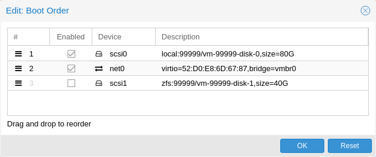
이렇게 하면 게스트는 먼저 디스크 scsi0에서 부팅을 시도하고, 실패하면 net0에서 네트워크 부팅을 시도하고, 실패하면 마지막으로 통과된 PCIe 장치(NVMe의 경우 디스크로 표시됨, 그렇지 않으면 옵션 ROM으로 시작)에서 부팅을 시도합니다.
GUI에서 드래그 앤 드롭 편집기를 사용하여 부팅 순서를 지정하고 확인란을 사용하여 특정 장치의 부팅을 활성화하거나 비활성화할 수 있습니다.
게스트가 여러 디스크를 사용하여 OS를 부팅하거나 부트로더를 로드하는 경우, 게스트가 부팅할 수 있도록 모든 디스크를 부팅 가능으로 표시해야 합니다(즉, 체크박스가 활성화되어 있거나 구성의 목록에 표시되어야 함). 이는 최신 SeaBIOS 및 OVMF 버전이 부팅 가능으로 표시된 경우에만 디스크를 초기화하기 때문입니다.
어떤 경우든 목록에 표시되지 않거나 체크 표시가 비활성화된 장치도 운영 체제가 부팅하고 초기화하면 게스트에서 계속 사용할 수 있습니다. 부팅 가능 플래그는 게스트 BIOS 및 부트로더에만 영향을 미칩니다.
10.2.17. 가상 머신의 자동 시작 및 종료#
VM을 만든 후에는 호스트 시스템이 부팅될 때 자동으로 시작되기를 원할 것입니다. 이를 위해 웹 인터페이스의 VM 옵션 탭에서 부팅 시 시작 옵션을 선택하거나 다음 명령으로 설정해야 합니다.
# qm set <vmid> -onboot 1
시작 및 종료 순서
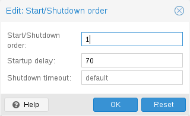
어떤 경우에는 VM의 부팅 순서를 미세 조정할 수 있어야 합니다. 예를 들어 VM 중 하나가 다른 게스트 시스템에 방화벽 또는 DHCP를 제공하는 경우입니다. 이를 위해 다음 매개변수를 사용할 수 있습니다.
시작/종료 순서: 시작 순서 우선 순위를 정의합니다. 예를 들어 VM을 가장 먼저 시작하려면 1로 설정합니다. (종료에 대해 역방향 시작 순서를 사용하므로 시작 순서가 1인 머신은 가장 마지막으로 종료됩니다.) 호스트에서 여러 VM이 동일한 순서를 정의한 경우 VMID에 따라 오름차순으로 정렬됩니다.
시작 지연: 이 VM 시작과 후속 VM 시작 사이의 간격을 정의합니다. 예를 들어 다른 VM을 시작하기 전에 240초를 기다리려면 240으로 설정합니다.
종료 시간 초과: Proxmox VE가 종료 명령을 내린 후 VM이 오프라인이 될 때까지 기다려야 하는 기간을 초 단위로 정의합니다. 기본적으로 이 값은 180으로 설정되어 Proxmox VE가 종료 요청을 내리고 머신이 오프라인이 될 때까지 180초를 기다립니다. 시간 초과 후에도 머신이 여전히 온라인 상태이면 강제로 중지됩니다.
HA 스택에서 관리하는 VM은 현재 부팅 시 시작 및 부팅 순서 옵션을 따르지 않습니다. HA 관리자 자체가 VM이 시작되고 중지되도록 보장하므로 이러한 VM은 시작 및 종료 알고리즘에 의해 건너뜁니다.
시작/종료 순서 매개변수가 없는 머신은 항상 매개변수가 설정된 머신보다 먼저 시작됩니다. 또한 이 매개변수는 클러스터 전체가 아닌 동일한 호스트에서 실행되는 가상 머신 간에만 적용할 수 있습니다.
호스트 부팅과 첫 번째 VM 부팅 사이에 지연이 필요한 경우 Proxmox VE 노드 관리 섹션을 참조하세요.
10.2.18. QEMU 게스트 에이전트#
QEMU 게스트 에이전트는 VM 내부에서 실행되는 서비스로, 호스트와 게스트 간의 통신 채널을 제공합니다. 정보를 교환하는 데 사용되며 호스트가 게스트에 명령을 내릴 수 있도록 합니다.
예를 들어, VM 요약 패널의 IP 주소는 게스트 에이전트를 통해 가져옵니다.
또는 백업을 시작할 때 게스트 에이전트를 통해 게스트에게 fs-freeze 및 fs-thaw 명령을 통해 미처리 쓰기를 동기화하도록 지시합니다.
게스트 에이전트가 제대로 작동하려면 다음 단계를 수행해야 합니다.
게스트에 에이전트를 설치하고 실행 중인지 확인합니다.
Proxmox VE에서 에이전트를 통해 통신을 활성화합니다.
게스트 에이전트 설치
대부분의 Linux 배포판에서 게스트 에이전트를 사용할 수 있습니다. 패키지 이름은 일반적으로 qemu-guest-agent입니다.
Windows의 경우 Fedora VirtIO 드라이버 ISO에서 설치할 수 있습니다.
게스트 에이전트 통신 활성화
Proxmox VE와 게스트 에이전트 간의 통신은 VM의 옵션 패널에서 활성화할 수 있습니다. 변경 사항을 적용하려면 VM을 새로 시작해야 합니다.
QGA를 사용한 자동 TRIM
Run guest-trim 옵션을 활성화할 수 있습니다. 이 옵션을 활성화하면 Proxmox VE는 저장소에 0을 쓸 가능성이 있는 다음 작업 후에 게스트에게 trim 명령을 내립니다.
디스크를 다른 저장소로 이동
VM을 로컬 저장소가 있는 다른 노드로 라이브 마이그레이션
씬 프로비저닝된 저장소에서 이는 사용되지 않는 공간을 확보하는 데 도움이 될 수 있습니다.
참고 Linux의 ext4에는 메모리 내 최적화를 사용하여 중복된 TRIM 요청을 발행하지 않기 때문에 주의가 필요합니다. 게스트는 기본 저장소의 변경 사항을 알지 못하므로 첫 번째 guest-trim만 예상대로 실행됩니다. 다음 재부팅까지 후속 작업은 그 이후로 변경된 파일 시스템의 일부만 고려합니다.
백업 시 파일 시스템 동결 및 해동
기본적으로 게스트 파일 시스템은 백업이 수행될 때 fs-freeze QEMU 게스트 에이전트 명령을 통해 동기화되어 일관성을 제공합니다.
Windows 게스트에서 일부 애플리케이션은 Windows VSS(볼륨 섀도 복사본 서비스) 계층에 연결하여 일관된 백업을 직접 처리할 수 있으며, 그러면 fs-freeze가 이를 방해할 수 있습니다. 예를 들어, 일부 SQL Server에서 fs-freeze를 호출하면 VSS가 SQL Writer VSS 모듈을 호출하여 차등 백업을 위한 SQL Server 백업 체인을 끊는 모드로 트리거하는 것으로 관찰되었습니다.
이러한 설정의 경우 freeze-fs-on-backup QGA 옵션을 0으로 설정하여 Proxmox VE가 백업 시 동결 및 해동 주기를 실행하지 않도록 구성할 수 있습니다. 이는 일관성을 위해 백업 시 게스트 파일 시스템 동결/해동 옵션(Freeze/thaw guest filesystems on backup for consistency)을 사용하여 GUI를 통해서도 수행할 수 있습니다.
중요 이 옵션을 비활성화하면 일관되지 않은 파일 시스템으로 백업이 발생할 수 있으므로 무엇을 해야 할지 아는 경우에만 비활성화해야 합니다.
문제 해결
VM이 종료되지 않음
게스트 에이전트가 설치되어 실행 중인지 확인합니다.
게스트 에이전트가 활성화되면 Proxmox VE는 게스트 에이전트를 통해 shutdown과 같은 전원 명령을 보냅니다. 게스트 에이전트가 실행 중이 아니면 명령을 제대로 실행할 수 없고 shutdown 명령이 시간 초과로 실행됩니다.
10.2.19. SPICE 향상#
SPICE 향상은 원격 뷰어 경험을 개선할 수 있는 선택 사항입니다.
GUI를 통해 이를 활성화하려면 가상 머신의 옵션 패널로 이동합니다. 다음 명령을 실행하여 CLI를 통해 이를 활성화합니다.
qm set <vmid> -spice_enhancements folderharing=1,videostreaming=all
이러한 기능을 사용하려면 가상 머신의 디스플레이를 SPICE(qxl)로 설정해야 합니다. 폴더 공유
게스트와 로컬 폴더를 공유합니다. spice-webdavd 데몬을 게스트에 설치해야 합니다. 이 데몬은 http://localhost:9843에 있는 로컬 WebDAV 서버를 통해 공유 폴더를 사용할 수 있도록 합니다.
Windows 게스트의 경우 Spice WebDAV 데몬 설치 프로그램을 공식 SPICE 웹사이트에서 다운로드할 수 있습니다.
대부분의 Linux 배포판에는 spice-webdavd라는 패키지가 있어 설치할 수 있습니다.
Virt-Viewer(원격 뷰어)에서 폴더를 공유하려면 파일 → 기본 설정으로 이동합니다. 공유할 폴더를 선택한 다음 확인란을 활성화합니다.
폴더 공유는 현재 Virt-Viewer의 Linux 버전에서만 작동합니다.
10.3. 마이그레이션#
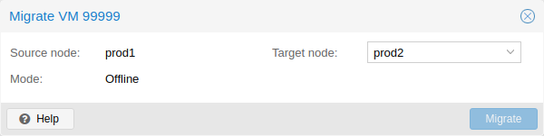
클러스터가 있는 경우 다음을 사용하여 VM을 다른 호스트로 마이그레이션할 수 있습니다.
# qm migrate <vmid> <target>
일반적으로 이를 위한 두 가지 메커니즘이 있습니다.
온라인 마이그레이션(일명 라이브 마이그레이션)
오프라인 마이그레이션
10.3.1. 온라인 마이그레이션#
VM이 실행 중이고 로컬로 바인딩된 리소스가 구성되지 않은 경우(예: 통과되는 장치) qm 마이그레이션 명령 호출에서 –online 플래그를 사용하여 라이브 마이그레이션을 시작할 수 있습니다. VM이 실행 중일 때 웹 인터페이스는 기본적으로 라이브 마이그레이션으로 설정됩니다.
작동 방식
온라인 마이그레이션은 먼저 대상 호스트에서 수신 플래그를 사용하여 새 QEMU 프로세스를 시작합니다. 이 프로세스는 게스트 vCPU가 여전히 일시 중지된 상태에서 기본 초기화만 수행한 다음 소스 가상 머신의 게스트 메모리 및 장치 상태 데이터 스트림을 기다립니다. 디스크와 같은 다른 모든 리소스는 VM의 런타임 상태 마이그레이션이 시작되기 전에 공유되거나 이미 전송되었습니다. 따라서 메모리 콘텐츠와 장치 상태만 전송됩니다.
이 연결이 설정되면 소스는 메모리 콘텐츠를 대상으로 비동기적으로 전송하기 시작합니다. 소스의 게스트 메모리가 변경되면 해당 섹션이 더티로 표시되고 게스트 메모리 데이터를 전송하기 위한 또 다른 패스가 수행됩니다. 이 루프는 실행 중인 소스 VM과 수신 대상 VM 간의 데이터 차이가 몇 밀리초 내에 전송될 만큼 작을 때까지 반복됩니다. 그러면 사용자나 프로그램이 일시 중지를 알아차리지 못한 채 소스 VM을 완전히 일시 중지하여 나머지 데이터를 대상으로 전송한 다음 대상 VM의 CPU 일시 중지를 해제하여 1초 이내에 새로운 실행 VM으로 만들 수 있습니다.
요구 사항
라이브 마이그레이션이 작동하려면 몇 가지가 필요합니다.
VM에 마이그레이션할 수 없는 로컬 리소스가 없습니다. 예를 들어 현재 통과하는 PCI 또는 USB 장치는 라이브 마이그레이션을 차단합니다. 반면 로컬 디스크는 대상으로 전송하여 마이그레이션할 수 있습니다.
호스트는 동일한 Proxmox VE 클러스터에 있습니다.
호스트 간에 작동하는(그리고 안정적인) 네트워크 연결이 있습니다.
대상 호스트에는 Proxmox VE 패키지와 동일하거나 더 높은 버전이 있어야 합니다. 때로는 반대로 작동할 수 있지만 보장할 수는 없습니다.
호스트에는 유사한 기능을 가진 동일한 공급업체의 CPU가 있습니다. 다른 공급업체는 구성된 실제 모델 및 VM CPU 유형에 따라 작동할 수 있지만 보장할 수는 없습니다. 따라서 프로덕션에서 이러한 설정을 배포하기 전에 테스트하세요.
10.3.2. 오프라인 마이그레이션#
로컬 리소스가 있는 경우 모든 디스크가 두 호스트에 정의된 스토리지에 있는 한 VM을 오프라인으로 마이그레이션할 수 있습니다. 그런 다음 마이그레이션은 온라인 마이그레이션과 마찬가지로 네트워크를 통해 디스크를 대상 호스트로 복사합니다. 모든 하드웨어 패스스루 구성은 대상 호스트의 장치 위치에 맞게 조정해야 할 수 있습니다.
10.4. 복사본과 복제본#
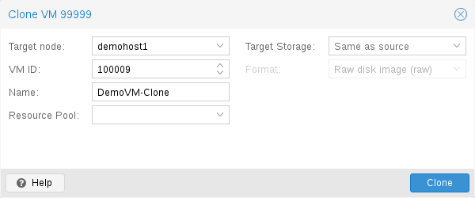
VM 설치는 일반적으로 운영 체제 공급업체의 설치 미디어(CD-ROM)를 사용하여 수행됩니다. OS에 따라 이 작업은 시간이 많이 소요될 수 있으므로 피하는 것이 좋습니다.
동일한 유형의 여러 VM을 배포하는 쉬운 방법은 기존 VM을 복사하는 것입니다. 이러한 복사본에 대해 복제본이라는 용어를 사용하고 연결된 복제본과 전체 복제본을 구분합니다.
Full Clone(전체 복제본)
이러한 복사의 결과는 독립적인 VM입니다. 새 VM은 원본과 스토리지 리소스를 공유하지 않습니다.
대상 스토리지를 선택할 수 있으므로 이를 사용하여 VM을 완전히 다른 스토리지로 마이그레이션할 수 있습니다. 스토리지 드라이버가 여러 형식을 지원하는 경우 디스크 이미지 형식을 변경할 수도 있습니다.
전체 복제본은 모든 VM 이미지 데이터를 읽고 복사해야 합니다. 이는 일반적으로 연결된 복제본을 만드는 것보다 훨씬 느립니다.
일부 스토리지 유형은 현재 VM 데이터로 기본 설정된 특정 스냅샷을 복사할 수 있습니다. 이는 또한 최종 사본에 원본 VM의 추가 스냅샷이 포함되지 않음을 의미합니다.
Linked Clone(연결된 복제본)
최신 스토리지 드라이버는 빠른 연결된 복제본을 생성하는 방법을 지원합니다. 이러한 복제본은 초기 내용이 원본 데이터와 동일한 쓰기 가능한 사본입니다. 연결된 복제본을 만드는 것은 거의 즉각적이며 처음에는 추가 공간을 사용하지 않습니다.
새 이미지가 여전히 원본을 참조하기 때문에 연결된 복제본이라고 합니다. 수정되지 않은 데이터 블록은 원본 이미지에서 읽히지만 수정 사항은 새 위치에서 쓰여지고(나중에 읽힙니다). 이 기술을 쓰기 시 복사라고 합니다.
이를 위해서는 원본 볼륨이 읽기 전용이어야 합니다. Proxmox VE를 사용하면 모든 VM을 읽기 전용 템플릿으로 변환할 수 있습니다. 이러한 템플릿은 나중에 연결된 복제본을 효율적으로 만드는 데 사용할 수 있습니다.
연결된 복제본이 있는 동안에는 원본 템플릿을 삭제할 수 없습니다.
연결된 복제본의 대상 스토리지는 스토리지 내부 기능이므로 변경할 수 없습니다.
대상 노드 옵션을 사용하면 다른 노드에서 새 VM을 만들 수 있습니다. 유일한 제한 사항은 VM이 공유 스토리지에 있고 해당 스토리지가 대상 노드에서도 사용 가능하다는 것입니다.
리소스 충돌을 피하기 위해 모든 네트워크 인터페이스 MAC 주소가 무작위로 지정되고 VM BIOS(smbios1) 설정에 대한 새 UUID가 생성됩니다.
10.5. 가상 머신 템플릿#
VM을 템플릿으로 변환할 수 있습니다. 이러한 템플릿은 읽기 전용이며, 이를 사용하여 연결된 복제본을 만들 수 있습니다.
템플릿을 시작할 수 없습니다. 이렇게 하면 디스크 이미지가 수정되기 때문입니다. 템플릿을 변경하려면 연결된 복제본을 만들고 수정하세요.
10.6. VM 생성 ID#
Proxmox VE는 가상 머신에 대한 가상 머신 생성 ID(vmgenid)를 지원합니다. 이는 게스트 운영 체제에서 백업이나 스냅샷 롤백을 복원하는 것과 같이 시간 이동 이벤트로 이어지는 모든 이벤트를 감지하는 데 사용할 수 있습니다.
새 VM을 만들 때 vmgenid가 자동으로 생성되어 구성 파일에 저장됩니다.
기존 VM에 vmgenid를 만들고 추가하려면 특수 값 ‘1’을 전달하여 Proxmox VE가 하나를 자동 생성하도록 하거나, 값으로 사용하여 UUID를 수동으로 설정할 수 있습니다. 예:
# qm set VMID -vmgenid 1
# qm set VMID -vmgenid 00000000-0000-0000-0000-00000000000
참고 기존 VM에 vmgenid 장치를 처음 추가하면 스냅샷 롤백, 백업 복원 등의 변경과 동일한 효과가 발생할 수 있습니다. VM이 이를 세대 변경으로 해석할 수 있기 때문입니다.
드문 경우지만 vmgenid 메커니즘이 필요하지 않은 경우 VM 생성 시 값에 ‘0’을 전달하거나 다음을 사용하여 구성에서 속성을 소급적으로 삭제할 수 있습니다.
# qm set VMID -delete vmgenid
vmgenid의 가장 두드러진 사용 사례는 최신 Microsoft Windows 운영 체제로, 스냅샷 롤백, 백업 복원 또는 전체 VM 복제 작업 시 시간에 민감한 서비스나 복제 서비스(예: 데이터베이스 또는 도메인 컨트롤러)에서 문제를 피하기 위해 사용합니다.
10.7. 가상 머신 가져오기#
외부 하이퍼바이저 또는 다른 Proxmox VE 클러스터에서 기존 가상 머신을 가져오는 방법은 다양하며, 가장 일반적인 방법은 다음과 같습니다.
ESXi 특수 스토리지에서 제공하는 것과 같은 import(가져오기) 콘텐츠 유형을 활용하는 기본 가져오기 마법사 사용.
소스에서 백업을 수행한 다음 대상에서 복원. 이 방법은 다른 Proxmox VE 인스턴스에서 마이그레이션할 때 가장 효과적입니다.
qm 명령줄 도구의 OVF 특정 가져오기 명령 사용.
다른 하이퍼바이저에서 Proxmox VE로 VM을 가져오는 경우 Proxmox VE의 개념에 익숙해지는 것이 좋습니다.
10.7.1. 가져오기 마법사#

Proxmox VE는 API 및 웹 기반 사용자 인터페이스에 네이티브 통합하기 위한 스토리지 플러그인 시스템을 사용하는 통합 VM 임포터를 제공합니다. 이를 사용하여 대부분의 구성을 Proxmox VE의 구성 모델에 매핑하고 다운타임을 줄인 상태로 VM을 전체적으로 임포트할 수 있습니다.
참고 사항 임포트 마법사는 Proxmox VE 8.2 개발 주기 동안 추가되었으며 기술 미리보기 상태입니다. 이미 유망하고 안정적으로 작동하지만 아직 활발하게 개발 중입니다.
임포트 마법사를 사용하려면 먼저 임포트 소스에 대한 새 스토리지를 설정해야 합니다. 웹 인터페이스에서 Datacenter → Storage → Add에서 설정할 수 있습니다.
그런 다음 리소스 트리에서 새 스토리지를 선택하고 Virtual Guests 콘텐츠 탭을 사용하여 임포트할 수 있는 모든 사용 가능한 게스트를 확인할 수 있습니다.
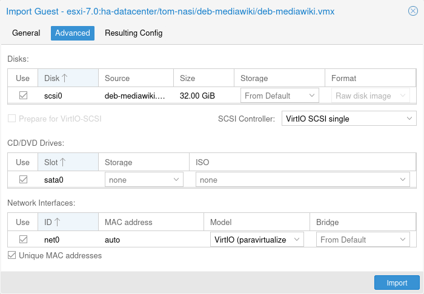
하나를 선택하고 Import 버튼을 사용하거나 두 번 클릭하여 임포트 마법사를 엽니다. 여기에서 사용 가능한 옵션의 하위 집합을 수정한 다음 임포트를 시작할 수 있습니다. 가져오기가 완료된 후에 더 고급 수정을 할 수 있습니다.
ESXi 가져오기 마법사는 ESXi 버전 6.5~8.0에서 테스트되었습니다. vSAN 스토리지를 사용하는 게스트는 직접 가져올 수 없습니다. 먼저 디스크를 다른 스토리지로 옮겨야 합니다. vCenter를 가져오기 소스로 사용할 수는 있지만 성능이 크게 저하됩니다(5~10배 느림).
가상 게스트를 새 하이퍼바이저에 적응시키는 방법에 대한 단계별 가이드와 팁은 Proxmox VE로 마이그레이션 위키 문서를 참조하세요.
OVA/OVF 가져오기
OVA/OVF 파일을 가져오려면 먼저 가져오기 콘텐츠 유형이 있는 파일 기반 저장소가 필요합니다. 이 저장소에는 OVA 파일이나 해당 이미지가 있는 OVF 파일을 플랫 구조로 넣을 수 있는 가져오기 폴더가 있습니다. 또는 웹 UI를 사용하여 OVA 파일을 직접 업로드하거나 다운로드할 수 있습니다. 그런 다음 웹 UI를 사용하여 해당 파일을 선택하고 가져오기 마법사를 사용하여 게스트를 가져올 수 있습니다.
OVA 파일의 경우 이미지를 일시적으로 추출하기 위해 추가 공간이 필요합니다. 여기에는 이미지 콘텐츠 유형이 구성된 파일 기반 저장소가 필요합니다. 기본적으로 소스 저장소가 선택되지만 실제 대상 저장소로 가져오기 전에 이미지를 추출할 가져올 저장소(Import Working Storage)를 지정할 수 있습니다.
참고 OVA/OVF 파일 구조와 콘텐츠는 항상 잘 유지 관리되거나 정의되지 않으므로 일부 게스트 설정을 수동으로 조정해야 할 수 있습니다. 예를 들어, SCSI 컨트롤러 유형은 OVA/OVF 파일에서 거의 정의되지 않지만 기본값은 OVMF(UEFI)로 부팅할 수 없으므로 이러한 경우에는 Virtio SCSI 또는 VMware PVSCSI를 선택해야 합니다.
10.7.2. CLI를 통해 OVF/OVA 가져오기#
외부 하이퍼바이저에서 VM을 내보내는 것은 일반적으로 하나 이상의 디스크 이미지와 VM 설정(RAM, 코어 수)을 설명하는 구성 파일의 형태를 취합니다.
디스크 이미지는 디스크가 VMware 또는 VirtualBox에서 온 경우 vmdk 형식이거나 디스크가 KVM 하이퍼바이저에서 온 경우 qcow2 형식일 수 있습니다. VM 내보내기에 가장 널리 사용되는 구성 형식은 OVF 표준이지만 실제로는 많은 설정이 표준 자체에 구현되지 않고 하이퍼바이저가 비표준 확장으로 보충 정보를 내보내기 때문에 상호 운용성이 제한됩니다.
형식 문제 외에도 에뮬레이트된 하드웨어가 한 하이퍼바이저에서 다른 하이퍼바이저로 너무 많이 변경되면 다른 하이퍼바이저에서 디스크 이미지를 가져오는 데 실패할 수 있습니다. Windows VM은 특히 이 점에 대해 우려하는데, OS가 하드웨어 변경에 대해 매우 까다롭기 때문입니다. 이 문제는 내보내기 전에 인터넷에서 제공되는 MergeIDE.zip 유틸리티를 설치하고 가져온 Windows VM을 부팅하기 전에 하드 디스크 유형인 IDE를 선택하면 해결할 수 있습니다.
마지막으로, 에뮬레이션된 시스템의 속도를 개선하고 하이퍼바이저에 특화된 준가상화 드라이버에 대한 문제가 있습니다. GNU/Linux 및 기타 무료 Unix OS에는 기본적으로 필요한 모든 드라이버가 설치되어 있으며 VM을 가져온 직후 준가상화 드라이버로 전환할 수 있습니다. Windows VM의 경우 Windows 준가상화 드라이버를 직접 설치해야 합니다.
GNU/Linux 및 기타 무료 Unix는 일반적으로 번거롭지 않게 가져올 수 있습니다. 위의 문제로 인해 모든 경우에 Windows VM의 성공적인 가져오기/내보내기를 보장할 수 없습니다.
Windows OVF 가져오기의 단계별 예
Microsoft는 Windows 개발을 시작하기 위한 Virtual Machines 다운로드를 제공합니다. 이 중 하나를 사용하여 OVF 가져오기 기능을 시연합니다.
Virtual Machine zip 다운로드
사용자 계약에 대해 알게 된 후 VMware 플랫폼용 Windows 10 Enterprise(평가판 - 빌드)를 선택하고 zip을 다운로드합니다.
zip에서 디스크 이미지 추출
unzip 유틸리티나 원하는 아카이버를 사용하여 zip을 압축 해제하고 ssh/scp를 통해 ovf 및 vmdk 파일을 Proxmox VE 호스트에 복사합니다.
가상 머신 가져오기
이렇게 하면 OVF 매니페스트에서 읽은 코어, 메모리 및 VM 이름을 사용하여 새 가상 머신이 생성되고 디스크가 local-lvm 스토리지로 가져옵니다. 네트워크를 수동으로 구성해야 합니다.
# qm importovf 999 WinDev1709Eval.ovf local-lvm
VM을 시작할 준비가 되었습니다.
가상 머신에 외부 디스크 이미지 추가
외부 하이퍼바이저에서 가져온 기존 디스크 이미지나 직접 만든 디스크 이미지를 VM에 추가할 수도 있습니다.
vmdebootstrap 도구로 Debian/Ubuntu 디스크 이미지를 만들었다고 가정해 보겠습니다.
vmdebootstrap --verbose \
--size 10GiB --serial-console \
--grub --no-extlinux \
--package openssh-server \
--package avahi-daemon \
--package qemu-guest-agent \
--hostname vm600 --enable-dhcp \
--customize=./copy_pub_ssh.sh \
--sparse --image vm600.raw
이제 새 대상 VM을 만들고 이미지를 저장소 pvedir로 가져와 VM의 SCSI 컨트롤러에 연결할 수 있습니다.
# qm create 600 --net0 virtio,bridge=vmbr0 --name vm600 --serial0 socket \
--boot order=scsi0 --scsihw virtio-scsi-pci --ostype l26 \
--scsi0 pvedir:0,import-from=/path/to/dir/vm600.raw
VM을 시작할 준비가 되었습니다.
10.8. Cloud-Init 지원#
Cloud-Init은 가상 머신 인스턴스의 조기 초기화를 처리하는 사실상의 다중 배포 패키지입니다. Cloud-Init을 사용하면 하이퍼바이저 측에서 네트워크 장치 및 ssh 키를 구성할 수 있습니다. VM이 처음 시작되면 VM 내부의 Cloud-Init 소프트웨어가 해당 설정을 적용합니다.
많은 Linux 배포판은 대부분 OpenStack용으로 설계된 바로 사용 가능한 Cloud-Init 이미지를 제공합니다. 이러한 이미지는 Proxmox VE에서도 작동합니다. 이러한 바로 사용 가능한 이미지를 얻는 것이 편리해 보일 수 있지만 일반적으로 이미지를 직접 준비하는 것이 좋습니다. 장점은 설치한 내용을 정확히 알 수 있고 나중에 필요에 따라 이미지를 쉽게 사용자 정의할 수 있다는 것입니다.
이러한 Cloud-Init 이미지를 만든 후에는 VM 템플릿으로 변환하는 것이 좋습니다. VM 템플릿에서 연결된 복제본을 빠르게 만들 수 있으므로 새 VM 인스턴스를 롤아웃하는 빠른 방법입니다. 새 VM을 시작하기 전에 네트워크(그리고 ssh 키)만 구성하면 됩니다.
Cloud-Init에서 프로비저닝한 VM에 로그인하려면 SSH 키 기반 인증을 사용하는 것이 좋습니다. 비밀번호를 설정할 수도 있지만 Proxmox VE가 Cloud-Init 데이터 내부에 해당 비밀번호의 암호화된 버전을 저장해야 하기 때문에 SSH 키 기반 인증을 사용하는 것만큼 안전하지 않습니다.
Proxmox VE는 Cloud-Init 데이터를 VM에 전달하기 위해 ISO 이미지를 생성합니다. 이를 위해 모든 Cloud-Init VM에 할당된 CD-ROM 드라이브가 있어야 합니다. 일반적으로 직렬 콘솔을 추가하여 디스플레이로 사용해야 합니다. 많은 Cloud-Init 이미지가 이에 의존하며 OpenStack에 필수적입니다. 그러나 다른 이미지에는 이 구성에 문제가 있을 수 있습니다. 직렬 콘솔을 사용해도 작동하지 않으면 기본 디스플레이 구성으로 다시 전환하세요.
10.8.1. Cloud-Init 템플릿 준비#
첫 번째 단계는 VM을 준비하는 것입니다. 기본적으로 모든 VM을 사용할 수 있습니다. 준비하려는 VM 내부에 Cloud-Init 패키지를 설치하기만 하면 됩니다. Debian/Ubuntu 기반 시스템에서는 다음과 같이 간단합니다.
apt-get install cloud-init
이 명령은 Proxmox VE 호스트에서 실행되도록 의도된 것이 아니라 VM 내부에서만 실행되도록 의도된 것입니다.
이미 많은 배포판에서 바로 사용할 수 있는 Cloud-Init 이미지(.qcow2 파일로 제공)를 제공하므로 이러한 이미지를 간단히 다운로드하여 가져올 수 있습니다. 다음 예에서는 Ubuntu에서 제공하는 https://cloud-images.ubuntu.com의 클라우드 이미지를 사용합니다.
# 이미지 다운로드
wget https://cloud-images.ubuntu.com/bionic/current/bionic-server-cloudimg-amd64.img
# VirtIO SCSI 컨트롤러로 새 VM 만들기
qm create 9000 --memory 2048 --net0 virtio,bridge=vmbr0 --scsihw virtio-scsi-pci
# 다운로드한 디스크를 로컬-lvm 스토리지로 가져와 SCSI 드라이브로 연결
qm set 9000 --scsi0 local-lvm:0,import-from=/path/to/bionic-server-cloudimg-amd64.img
Ubuntu Cloud-Init 이미지에는 SCSI 드라이브에 대한 virtio-scsi-pci 컨트롤러 유형이 필요합니다.
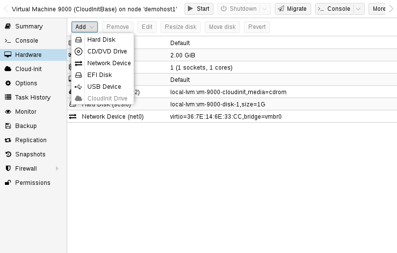
Cloud-Init CD-ROM 드라이브 추가
다음 단계는 Cloud-Init 데이터를 VM에 전달하는 데 사용되는 CD-ROM 드라이브를 구성하는 것입니다.
qm set 9000 --ide2 local-lvm:cloudinit
Cloud-Init 이미지에서 직접 부팅할 수 있도록 부팅 매개변수를 order=scsi0으로 설정하여 BIOS가 이 디스크에서만 부팅하도록 제한합니다. 이렇게 하면 VM BIOS가 부팅 가능한 CD-ROM에 대한 테스트를 건너뛰므로 부팅 속도가 빨라집니다.
qm set 9000 --boot order=scsi0
많은 Cloud-Init 이미지의 경우 직렬 콘솔을 구성하여 디스플레이로 사용해야 합니다. 그러나 해당 이미지에서 구성이 작동하지 않으면 대신 기본 디스플레이로 다시 전환합니다.
qm set 9000 --serial0 socket --vga serial0
마지막 단계에서는 VM을 템플릿으로 변환하는 것이 좋습니다. 이 템플릿에서 연결된 복제본을 빠르게 만들 수 있습니다. VM 템플릿에서 배포하는 것은 전체 복제본(복사본)을 만드는 것보다 훨씬 빠릅니다.
qm template 9000
10.8.2. Cloud-Init 템플릿 배포#
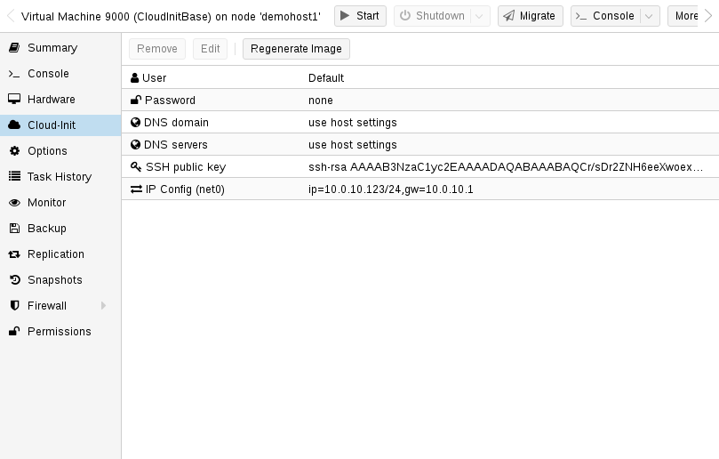
다음을 복제하여 이러한 템플릿을 쉽게 배포할 수 있습니다.
qm clone 9000 123 --name ubuntu2
그런 다음 인증에 사용되는 SSH 공개 키를 구성하고 IP 설정을 구성합니다.
qm set 123 --sshkey ~/.ssh/id_rsa.pub
qm set 123 --ipconfig0 ip=10.0.10.123/24,gw=10.0.10.1
단일 명령만 사용하여 모든 Cloud-Init 옵션을 구성할 수도 있습니다. 줄 길이를 줄이기 위해 위의 예를 간단히 분할하여 명령을 구분했습니다. 또한 특정 환경에 맞는 IP 설정을 채택해야 합니다.
10.8.3. 사용자 지정 Cloud-Init 구성#
Cloud-Init 통합을 통해 자동 생성된 구성 대신 사용자 지정 구성 파일을 사용할 수도 있습니다. 이 작업은 명령줄에서 cicustom 옵션을 통해 수행됩니다.
qm set 9000 --cicustom "user=<volume>,network=<volume>,meta=<volume>"
사용자 지정 구성 파일은 스니펫을 지원하는 스토리지에 있어야 하며 VM이 마이그레이션될 모든 노드에서 사용할 수 있어야 합니다. 그렇지 않으면 VM을 시작할 수 없습니다. 예:
qm set 9000 --cicustom "user=local:snippets/userconfig.yaml"
Cloud-Init에는 세 가지 종류의 구성이 있습니다. 첫 번째는 위의 예에서 볼 수 있는 사용자 구성입니다. 두 번째는 네트워크 구성이고 세 번째는 메타 구성입니다. 모두 함께 지정하거나 필요에 따라 혼합하여 일치시킬 수 있습니다. 사용자 지정 구성 파일이 지정되지 않은 모든 구성에는 자동으로 생성된 구성이 사용됩니다.
생성된 구성은 사용자 지정 구성의 기반으로 덤프할 수 있습니다.
qm cloudinit dump 9000 user
네트워크와 메타에 동일한 명령이 있습니다.
10.8.4. Windows에서 Cloud-Init#
Windows에서 사용할 수 있는 Cloud-Init의 재구현은 cloudbase-init입니다. Cloud-Init의 모든 기능을 Cloudbase-Init에서 사용할 수 있는 것은 아니며, 일부 기능은 Cloud-Init과 다릅니다.
Cloudbase-Init은 ostype을 모든 Windows 버전으로 설정하고 citype를 configdrive2로 설정해야 하며, 이는 모든 Windows ostype의 기본값입니다.
무료로 제공되는 Windows용 기성 클라우드 이미지는 없습니다. Cloudbase-Init을 사용하려면 Windows 게스트를 수동으로 설치하고 구성해야 합니다.
10.8.5. Cloudbase-Init 템플릿 준비#
첫 번째 단계는 VM에 Windows를 설치하는 것입니다. 게스트에 Cloudbase-Init을 다운로드하여 설치합니다. 베타 버전을 설치해야 할 수도 있습니다. 설치가 끝날 때 Sysprep을 실행하지 마세요. 대신 먼저 Cloudbase-Init을 구성하세요.
설정할 수 있는 몇 가지 일반적인 옵션은 다음과 같습니다.
username: 관리자의 사용자 이름을 설정합니다.
groups: 사용자를 관리자 그룹에 추가할 수 있습니다.
inject_user_password: VM 구성에서 암호를 설정할 수 있도록 true로 설정합니다.
first_logon_behaviour: 로그인 시 새 암호를 요구하지 않도록 no로 설정합니다.
rename_admin_user: 기본 관리자 사용자의 이름을 username으로 지정한 사용자 이름으로 변경할 수 있도록 true로 설정합니다.
metadata_services: Cloudbase-Init에서 먼저 이 서비스를 확인하도록 cloudbaseinit.metadata.services.configdrive.ConfigDriveService로 설정합니다. 그렇지 않으면 부팅 후 Cloudbase-Init에서 시스템을 구성하는 데 몇 분이 걸릴 수 있습니다.
SetHostnamePlugin과 같은 일부 플러그인은 재부팅이 필요하며 자동으로 재부팅합니다. Cloudbase-Init에서 자동 재부팅을 비활성화하려면 allow_reboot를 false로 설정할 수 있습니다.
전체 구성 옵션은 공식 cloudbase-init 문서에서 찾을 수 있습니다.
구성의 일부 부분을 여전히 조정해야 하는 경우 구성 후 스냅샷을 만드는 것이 좋습니다. Cloudbase-Init을 구성한 후 템플릿을 만들기 시작할 수 있습니다. Windows 게스트를 종료하고 Cloud-Init 디스크를 추가하여 템플릿으로 만듭니다.
qm set 9000 --ide2 local-lvm:cloudinit
qm template 9000
템플릿을 새 VM으로 복제합니다.
qm clone 9000 123 --name windows123
그런 다음 비밀번호, 네트워크 구성 및 SSH 키를 설정합니다.
qm set 123 --cipassword <password>
qm set 123 --ipconfig0 ip=10.0.10.123/24,gw=10.0.10.1
qm set 123 --sshkey ~/.ssh/id_rsa.pub
비밀번호를 설정하기 전에 ostype이 모든 Windows 버전으로 설정되어 있는지 확인합니다. 그렇지 않으면 비밀번호가 암호화되고 Cloudbase-Init은 암호화된 비밀번호를 일반 텍스트 비밀번호로 사용합니다.
모든 것이 설정되면 복제된 게스트를 시작합니다. 첫 번째 부팅 시 로그인이 작동하지 않고 변경된 호스트 이름으로 자동으로 재부팅됩니다. 재부팅 후에는 새로운 비밀번호가 설정되고 로그인이 가능할 것입니다.
10.8.6. Cloudbase-Init 및 Sysprep#
Sysprep은 Windows 구성을 재설정하고 새로운 시스템을 제공하는 기능입니다. 이 기능은 Cloudbase-Init과 함께 사용하여 깨끗한 템플릿을 만들 수 있습니다.
Sysprep을 사용할 때는 조정해야 할 구성 파일이 2개 있습니다. 첫 번째는 일반 구성 파일이고 두 번째는 -unattend.conf로 끝나는 파일입니다.
Cloudbase-Init은 2단계로 실행됩니다. 먼저 -unattend.conf를 사용하는 Sysprep 단계와 기본 구성 파일을 사용하는 일반 단계입니다.
제공된 Unattend.xml 파일로 Sysprep을 실행하는 Windows Server는 바로 사용할 수 있습니다. 하지만 일반 Windows 버전에는 추가 단계가 필요합니다.
PowerShell 인스턴스를 엽니다.
관리자 사용자를 활성화합니다.
net user Administrator /active:yes`
관리자 사용자를 사용하여 Cloudbase-Init를 설치합니다.
Sysprepping 후 첫 번째 부팅 시 관리자 사용자를 활성화하는 명령을 포함하도록 Unattend.xml을 수정합니다.
<RunSynchronousCommand wcm:action="add">
<Path>net user administrator /active:yes</Path>
<Order>1</Order>
<Description>Enable Administrator User</Description>
</RunSynchronousCommand>
<Order>가 다른 동기 명령과 충돌하지 않는지 확인합니다. 이 명령 다음에 실행되도록 Cloudbase-Init 명령의 <Order>를 수정하려면 숫자를 더 높은 값으로 늘립니다. <Order>2
(Windows 11만 해당) 충돌하는 Microsoft.OneDriveSync 패키지를 제거합니다.
Get-AppxPackage -AllUsers Microsoft.OneDriveSync | Remove-AppxPackage -AllUsers
Cloudbase-Init 구성 디렉토리로 cd:
cd 'C:\Program Files\Cloudbase Solutions\Cloudbase-Init\conf'
(선택 사항) 구성 오류가 발생할 경우 Sysprep 전에 VM의 스냅샷을 만듭니다.
Sysprep을 실행합니다.
C:\Windows\System32\Sysprep\sysprep.exe /generalize /oobe /unattend:Unattend.xml
위의 단계를 따르면 Sysprep으로 인해 VM이 종료 상태가 됩니다. 이제 템플릿으로 만들고 복제하여 필요에 따라 구성할 수 있습니다.
10.8.7. Cloud-Init 특정 옵션#
cicustom: [meta=<볼륨>] [,network=<볼륨>] [,user=<볼륨>] [,vendor=<볼륨>] 시작 시 자동으로 생성된 파일을 대체할 사용자 지정 파일을 지정합니다.
meta=
“ .” cloud-init를 통해 VM에 전달된 모든 메타 데이터가 포함된 사용자 지정 파일을 지정합니다. 이는 공급자별 의미로 configdrive2와 nocloud는 다릅니다.
network=
cloud-init를 통해 VM에 모든 네트워크 데이터가 포함된 사용자 지정 파일을 전달합니다.
user=
cloud-init를 통해 VM에 모든 사용자 데이터가 포함된 사용자 지정 파일을 전달합니다.
vendor=
cloud-init를 통해 VM에 모든 공급업체 데이터가 포함된 사용자 지정 파일을 전달합니다.
cipassword:
사용자에게 할당할 비밀번호입니다. 일반적으로 이 비밀번호는 사용하지 않는 것이 좋습니다. 대신 ssh 키를 사용합니다. 또한 이전 cloud-init 버전은 해시된 비밀번호를 지원하지 않습니다.
citype: <configdrive2 | nocloud | opennebula>
cloud-init 구성 형식을 지정합니다. 기본값은 구성된 운영 체제 유형(ostype)에 따라 달라집니다. Linux의 경우 nocloud 형식을 사용하고 Windows의 경우 configdrive2를 사용합니다.
ciupgrade: <부울> (기본값 = 1)
첫 번째 부팅 후 자동 패키지 업그레이드를 수행합니다.
ciuser: <문자열>
이미지의 구성된 기본 사용자 대신 ssh 키와 비밀번호를 변경할 사용자 이름입니다.
<span class=”point”ipconfig[n]: [gw=<게이트웨이IPv4>] [,gw6=<게이트웨이IPv6>] [,ip=<IPv4형식/CIDR>] [,ip6=<IPv6형식/CIDR>]>
해당 인터페이스에 대한 IP 주소와 게이트웨이를 지정합니다.
IP 주소는 CIDR 표기법을 사용하고 게이트웨이는 선택 사항이지만 지정된 동일한 유형의 IP가 필요합니다.
특수 문자열 dhcp는 IP 주소에서 DHCP를 사용하는 데 사용할 수 있으며, 이 경우 명시적인 게이트웨이를 제공해서는 안 됩니다. IPv6의 경우 특수 문자열 auto를 사용하여 상태 비저장 자동 구성을 사용할 수 있습니다. 여기에는 다음이 필요합니다. cloud-init 19.4 이상.
cloud-init가 활성화되어 있고 IPv4나 IPv6 주소가 지정되지 않은 경우 IPv4에서 dhcp를 사용하도록 기본 설정됩니다.
gw=
IPv4 트래픽의 기본 게이트웨이.
옵션 필요: ip
gw6=
IPv6 트래픽의 기본 게이트웨이.
옵션 필요: ip6
ip=<IPv4Format/CIDR> (기본값 = dhcp)
CIDR 형식의 IPv4 주소.
ip6=<IPv6Format/CIDR> (기본값 = dhcp)
CIDR 형식의 IPv6 주소.
nameserver:
컨테이너의 DNS 서버 IP 주소를 설정합니다. searchdomain이나 nameserver가 설정되지 않은 경우 Create는 자동으로 호스트의 설정을 사용합니다.
searchdomain:
컨테이너의 DNS 검색 도메인을 설정합니다. 검색도메인이나 네임서버가 설정되지 않은 경우 Create는 자동으로 호스트의 설정을 사용합니다.
sshkeys:
공개 SSH 키 설정(한 줄에 하나의 키, OpenSSH 형식).
10.9. PCI(e) 패스스루#
PCI(e) 패스스루는 호스트에서 PCI 장치를 가상 머신이 제어할 수 있도록 하는 메커니즘입니다. 이는 가상화된 하드웨어를 사용하는 것보다 몇 가지 이점이 있습니다. 예를 들어 대기 시간이 짧고 성능이 높거나 기능이 더 많습니다(예: 오프로드).
하지만 가상 머신으로 장치를 패스스루하는 경우 해당 장치를 호스트나 다른 VM에서 더 이상 사용할 수 없습니다.
PCI 패스스루는 i440fx 및 q35 머신에서 사용할 수 있지만 PCIe 패스스루는 q35 머신에서만 사용할 수 있습니다. 이는 PCI 장치로 패스스루되는 PCIe 지원 장치가 PCI 속도로만 실행된다는 것을 의미하지 않습니다. 장치를 PCIe로 패스스루하면 게스트에 장치가 “정말 빠른 레거시 PCI 장치”가 아니라 PCIe 장치임을 알리는 플래그가 설정될 뿐입니다. 일부 게스트 애플리케이션은 이 기능의 이점을 얻습니다.
10.9.1. 일반 요구 사항#
패스스루는 실제 하드웨어에서 수행되므로 몇 가지 요구 사항을 충족해야 합니다. 이러한 요구 사항에 대한 간략한 개요는 아래에 나와 있습니다. 특정 장치에 대한 자세한 내용은 PCI 패스스루 예제를 참조하세요.
하드웨어
하드웨어는 IOMMU(I/O 메모리 관리 장치) 인터럽트 리매핑을 지원해야 하며 여기에는 CPU와 마더보드가 포함됩니다.
일반적으로 VT-d가 있는 Intel 시스템과 AMD-Vi가 있는 AMD 시스템은 이를 지원합니다. 그러나 하드웨어 구현이 나쁘고 드라이버가 없거나 품질이 낮기 때문에 모든 것이 즉시 작동할 것이라는 보장은 없습니다.
또한 서버 등급 하드웨어는 소비자 등급 하드웨어보다 더 나은 지원을 제공하는 경우가 많지만, 그렇더라도 많은 최신 시스템이 이를 지원할 수 있습니다.
하드웨어 공급업체에 문의하여 특정 설정에 대해 Linux에서 이 기능을 지원하는지 확인하세요.
PCI 카드 주소 확인
가장 쉬운 방법은 GUI를 사용하여 VM의 하드웨어 탭에서 “호스트 PCI” 유형의 장치를 추가하는 것입니다. 또는 명령줄을 사용할 수 있습니다.
다음을 사용하여 카드를 찾을 수 있습니다.
lspci
구성
하드웨어가 패스스루를 지원하는지 확인한 후 PCI(e) 패스스루를 활성화하기 위한 몇 가지 구성을 수행해야 합니다.
IOMMU
BIOS/UEFI에서 IOMMU 지원을 활성화해야 합니다. 일반적으로 해당 설정은 IOMMU 또는 VT-d라고 하지만 마더보드 설명서에서 정확한 옵션 이름을 찾을 수 있습니다.
AMD CPU의 경우 IOMMU가 기본적으로 활성화됩니다. 최신 커널(6.8 이상)의 경우 Intel CPU에도 해당됩니다. 이전 커널의 경우 다음을 추가하여 커널 명령줄을 통해 Intel CPU에서 활성화해야 합니다.
intel_iommu=on
IOMMU 패스스루 모드
하드웨어가 IOMMU 패스스루 모드를 지원하는 경우 이 모드를 활성화하면 성능이 향상될 수 있습니다. 그 이유는 VM이 하이퍼바이저에서 일반적으로 수행하는 (기본) DMA 변환을 우회하고 대신 DMA 요청을 하드웨어 IOMMU에 직접 전달하기 때문입니다. 이러한 옵션을 활성화하려면 다음을 추가합니다.
iommu=pt
커널 명령줄에 추가합니다.
커널 모듈
다음 모듈이 로드되었는지 확인해야 합니다. 이는 ‘/etc/modules’에 추가하여 달성할 수 있습니다.
매개 장치 패스스루
매개 장치(예: vGPU)를 통과하는 경우 다음은 필요하지 않습니다. 이러한 경우 해당 호스트 드라이버가 장치를 직접 소유합니다.
vfio
vfio_iommu_type1
vfio_pci
모듈과 관련된 모든 것을 변경한 후에는 initramfs를 새로 고쳐야 합니다. Proxmox VE에서는 다음을 실행하여 이를 수행할 수 있습니다.
# update-initramfs -u -k all
모듈이 로드되는지 확인하려면
# lsmod | grep vfio
의 출력에 위의 네 가지 모듈이 포함되어야 합니다.
구성 완료
마지막으로 재부팅하여 변경 사항을 적용하고 실제로 활성화되었는지 확인합니다.
# dmesg | grep -e DMAR -e IOMMU -e AMD-Vi
IOMMU, Directed I/O 또는 Interrupt Remapping이 활성화되었음을 표시해야 하며, 하드웨어와 커널에 따라 정확한 메시지는 다를 수 있습니다.
IOMMU가 의도한 대로 작동하는지 문제를 해결하거나 확인하는 방법에 대한 참고 사항은 위키의 Verifying IOMMU Parameters 섹션을 참조하세요.
통과시키려는 장치가 별도의 IOMMU 그룹에 있는 것도 중요합니다. 이는 Proxmox VE API를 호출하여 확인할 수 있습니다.
# pvesh get /nodes/{nodename}/hardware/pci --pci-class-blacklist ""
장치가 해당 기능(예: HDMI 오디오 장치가 있는 GPU) 또는 루트 포트 또는 PCI(e) 브리지와 함께 IOMMU 그룹에 있는 것은 괜찮습니다.
PCI(e) 슬롯
일부 플랫폼은 물리적 PCI(e) 슬롯을 다르게 처리합니다. 따라서 원하는 IOMMU 그룹 분리가 되지 않으면 카드를 다른 PCI(e) 슬롯에 넣는 것이 도움이 될 수 있습니다.
안전하지 않은 인터럽트
일부 플랫폼의 경우 안전하지 않은 인터럽트를 허용해야 할 수 있습니다. 이를 위해 /etc/modprobe.d/의 ‘.conf’로 끝나는 파일에 다음 줄을 추가합니다.
options vfio_iommu_type1 allow_unsafe_interrupts=1
이 옵션을 사용하면 시스템이 불안정해질 수 있습니다.
GPU 패스스루 참고 사항
Proxmox VE 웹 인터페이스에서 NoVNC 또는 SPICE를 통해 GPU의 프레임 버퍼를 표시할 수 없습니다.
전체 GPU 또는 vGPU를 통과하고 그래픽 출력이 필요한 경우 카드에 모니터를 물리적으로 연결하거나 게스트 내에서 원격 데스크톱 소프트웨어(예: VNC 또는 RDP)를 구성해야 합니다.
예를 들어 OpenCL이나 CUDA를 사용하는 프로그램에 대해 GPU를 하드웨어 가속기로 사용하려는 경우에는 이 작업이 필요하지 않습니다.
10.9.2. 호스트 장치 패스스루#
가장 많이 사용되는 PCI(e) 패스스루 변형은 GPU나 네트워크 카드와 같은 전체 PCI(e) 카드를 패스스루하는 것입니다.
호스트 구성 Proxmox VE는 호스트에서 PCI(e) 장치를 자동으로 사용할 수 없게 만들려고 합니다. 그러나 이것이 작동하지 않으면 두 가지 작업을 수행할 수 있습니다.
장치 ID를 vfio-pci 모듈의 옵션에 추가하여 전달합니다.
옵션 vfio-pci ids=1234:5678,4321:8765 /etc/modprobe.d/의 .conf 파일에 추가합니다. 여기서 1234:5678과 4321:8765는 다음을 통해 얻은 공급업체 및 장치 ID입니다.
lspci -nn#
호스트의 드라이버를 완전히 블랙리스트에 추가하여 패스스루를 위해 바인딩할 수 있도록 합니다.
블랙리스트 DRIVERNAME /etc/modprobe.d/의 .conf 파일에 추가합니다.
드라이버 이름을 찾으려면 다음을 실행합니다.
lspci -k#
예:
lspci -k | grep -A 3 “VGA”#
다음과 비슷한 내용이 출력됩니다.
01:00.0 VGA 호환 컨트롤러: NVIDIA Corporation GP108 [GeForce GT 1030] (rev a1)
하위 시스템: Micro-Star International Co., Ltd. [MSI] GP108 [GeForce GT 1030]
사용 중인 커널 드라이버:
echo “blacklist
이 방법이 효과가 없다면 vfio-pci를 로드하기 전에 GPU 모듈을 로드하도록 소프트 종속성을 설정해야 할 수 있습니다. softdep 플래그로 이 작업을 수행할 수 있습니다. 자세한 내용은 modprobe.d의 manpage도 참조하세요.
예를 들어,
# echo "softdep <some-module> pre: vfio-pci" >> /etc/modprobe.d/<some-module>.conf
구성 확인 변경 사항이 성공했는지 확인하려면
# lspci -nnk
를 사용하고 장치 항목을 확인합니다.
Kernel driver in use: vfio-pci 라고 표시되거나 사용 중 줄이 완전히 누락된 경우 장치를 패스스루에 사용할 준비가 된 것입니다.
참고 중재된 장치 중재된 장치의 경우 이 줄은 장치가 vfio-pci가 아닌 호스트 드라이버로 직접 소유되므로 다릅니다.
VM 구성
GPU를 통과할 때 최상의 호환성은 머신 유형으로 q35를 사용하고 SeaBIOS 대신 OVMF(VM용 UEFI)를 사용하고 PCI 대신 PCIe를 사용할 때 달성됩니다. GPU 패스스루에 OVMF를 사용하려면 GPU에 UEFI 지원 ROM이 있어야 하며, 그렇지 않으면 대신 SeaBIOS를 사용해야 합니다. ROM이 UEFI 지원인지 확인하려면 PCI 패스스루 예제 위키를 참조하세요.
또한 OVMF를 사용하면 VGA 중재를 비활성화하여 부팅 중에 실행해야 하는 레거시 코드 양을 줄일 수 있습니다. VGA 중재를 비활성화하려면 다음을 실행합니다.
echo “options vfio-pci ids=
# lspci -nn
PCI 장치는 VM의 하드웨어 섹션에서 웹 인터페이스에 추가할 수 있습니다. 또는 명령줄을 사용할 수 있습니다. 예를 들어 다음을 실행하여 VM 구성에서 hostpciX 옵션을 설정합니다.
# qm set VMID -hostpci0 00:02.0
또는 VM 구성 파일에 줄을 추가합니다.
hostpci0: 00:02.0
장치에 여러 기능이 있는 경우(예: ‘00:02.0’ 및 ‘00:02.1’) 단축 구문 00:02`를 사용하여 모두 전달할 수 있습니다. 이는 웹 인터페이스에서 모든 기능` 확인란을 선택하는 것과 같습니다.
장치와 게스트 OS에 따라 필요할 수 있는 몇 가지 옵션이 있습니다.
x-vga=on|off는 PCI(e) 장치를 VM의 기본 GPU로 표시합니다. 이 옵션을 활성화하면 vga 구성 옵션이 무시됩니다.
pcie=on|off는 Proxmox VE에 PCIe 또는 PCI 포트를 사용하도록 지시합니다. 일부 게스트/장치 조합에는 PCI가 아닌 PCIe가 필요합니다. PCIe는 q35 머신 유형에서만 사용할 수 있습니다.
rombar=on|off는 게스트에게 펌웨어 ROM을 표시합니다. 기본값은 켜짐입니다. 일부 PCI(e) 장치에서는 이 기능을 비활성화해야 합니다.
romfile=
는 장치에서 사용할 ROM 파일에 대한 선택적 경로입니다. 이는 /usr/share/kvm/ 아래의 상대 경로입니다.
예 GPU가 기본으로 설정된 PCIe 패스스루의 예:
# qm set VMID -hostpci0 02:00,pcie=on,x-vga=on
PCI ID 재정의
게스트에게 표시되는 PCI 공급업체 ID, 장치 ID 및 하위 시스템 ID를 재정의할 수 있습니다. 이는 장치가 게스트의 드라이버가 인식하지 못하는 ID를 가진 변형이지만 해당 드라이버를 강제로 로드하려는 경우 유용합니다(예: 장치가 지원되는 변형과 동일한 칩셋을 공유한다는 것을 알고 있는 경우).
사용 가능한 옵션은 공급업체 ID, 장치 ID, 하위 공급업체 ID 및 하위 장치 ID입니다. 이 중 하나 또는 전부를 설정하여 장치의 기본 ID를 재정의할 수 있습니다.
예:
# qm set VMID -hostpci0 02:00,device-id=0x10f6,sub-vendor-id=0x0000